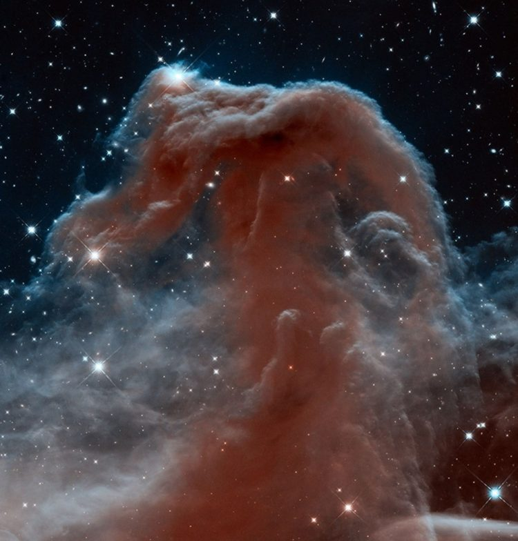

С днём космонавтики


Различные факты о космосе

Различные статьи
Первый человек в космосе
Юрий Алексеевич Гагарин — это человек, который первым покорил космическое пространство. Он совершил подвиг, вошедший в историю ипрославивший огромную страну.Гагарин — кумир, идеал и образец целого поколения. Человеком-легендой и человеком-символом он стал еще при жизни, не забывают о нем и сегодня.
В 1959 году было объявлено о начале отбора кандидатов на полет в космос. Юрий не мог пропустить эту возможность и сразу же заявил о своем желании стать кандидатом в группу испытателей новой летной техники (так негласно называли будущие космические корабли). Осенью того же года Гагарина вызвали в Москву.
В ходе отбора учитывались не только навыки и умения летчиков, но и физические данные. Не в последнюю очередь учитывался и рост кандидата — не более 170 см. Поскольку рост Гагарина составлял 157 см, по этому параметру он подходил идеально. В результате множественных проверок и тестов Юрий Алексеевич был признан одним из 20 кандидатов, которые могут полететь в космос.
Несмотря на жесткую конкуренцию, Юрий вел себя доброжелательно ко всем кандидатам, и они проявляли взаимное уважение к нему. Длительная подготовка ничуть его не утомляла — Гагарин безумно любил небо и готов был проводить в полетах все свое время. Удивительно, что ни в одной из областей подготовки он не был лидером, но благодаря сочетанию профессиональных навыков, психологической устойчивости и отдельным чертам характера, именно Гагарина посчитали лучшим кандидатом для первого полета в космос.
О том, что полет Гагарина в космос вскоре состоится, сам космонавт узнал только за месяц до события. Из-за соперничества с американцами, которые планировали отправить своего человека в космос 20 апреля 1961 года, было принято решение осуществить полет как можно раньше. Из двух рассматриваемых дат: 10 и 12 апреля, в конечном итоге выбор пал на второй вариант.
Первым космонавтом назначили Юрия Алексеевича, затем был назначен дублер Гагарина в первом полете — Герман Титов. С этого момента началась усиленная подготовка к полёту.
Дата полета Гагарина — событие, которое стало одним из важнейших для страны и всего мира — 12 апреля 1961 года. Из-за спешки, космический корабль «Восток» не был оборудован системой мягкой посадки и не имел системы аварийного спасения на случай, если что-то пойдет не так. Также не были продублированы некоторые важные системы корабля. То есть, риски для жизни космонавтов были огромными. Шанс, что Гагарин погибнет еще до того, как поднимется в воздух, был очень велик. Но, несмотря на это, он не отказался от задания и 12 апреля 1961 года в 9 часов 7 минут состоялся взлет корабля «Восток-1» с космодрома «Байконур».
До произнесенного Гагариным знаменитого «Поехали» стенограмма содержит два часа переговоров. Слова Гагарина перед полетом носят преимущественно технический характер: вместе с Королёвым они проверяли связь, считая от 1 до 10. Во время полета к космонавту обращались «Кедр» — таков был позывной Юрия Гагарина на период выполнения задания.
На завершающем этапе взлета произошел сбой в системе, отвечающей за отключение двигателей третьей ступени. Выключение произошло только после срабатывания дублирующего механизма, когда «Восток-1» находился на 100 км выше запланированного. В остальном, во время полета Гагарина вокруг Земли ракета-носитель выполняла свои функции исправно.
108 минут — столько длился полет Гагарина по земной орбите. Во время полёта Юрий подробно описывал все, что видел и чувствовал. Он неоднократно отмечал, что наша планета очень красивая и призывал беречь ее природу. Также Гагарин провел несколько простых экспериментов — выпил воду, поел, написал карандашом в блокноте. Он заметил, что если отпустить карандаш, то он сразу же «уплывет», поэтому рекомендовал такие предметы в дальнейшем привязывать. Гагарину очень понравились далекие звезды и, конечно же, Солнце.
До первого полета в космос никто не знал, как поведет себя человеческая психика в непривычных для нее условиях. Поэтому пилоту прежде, чем перейти на ручное управление, предстояло открыть конверт и решить простую математическую задачу. С этим «экзаменом» Гагарин успешно справился и отметил для себя, что никакого сумасшествия и прочих проблем с психикой у него не произошло.
В целом полёт проходил спокойно, без каких-либо внештатных ситуаций. Ракета Юрия Гагарина успешно подняла корабль на орбиту, затем был совершен один оборот «Восток-1» вокруг Земли, и уже только по возвращению случился небольшой сбой в тормозной системе, из-за чего корабль немного отклонился от курса. По этой причине было несколько изменено место, где приземлился Гагарин после первого полета — космонавт прилетел не туда, куда планировалось.
Изначально планировалось, что он приземлится неподалеку от Сталинграда. Однако, это произошло в нескольких километрах от города Энгельса, Саратовской области. С помощью регулировки строп на парашюте Гагарину удалось избежать попадания в холодные воды Волги. Приземление произошло 12 апреля 1962 года в 10:55. После приземления первого космонавта оперативно доставили в соседний поселок, откуда Юрий смог позвонить начальству и доложить о ситуации.
Из-за строгой секретности полета о нем даже советские СМИ узнали лишь спустя сутки. Никита Сергеевич Хрущев, являющийся главой советского государства во время полета Гагарина, поспособствовал тому, чтобы герой был достойно награжден. В честь его прилета был организован грандиозный праздник.
Первая медаль Гагарина после полета в космос называлась «За освоение целинных земель». Она была выдана космонавту сразу после приземления. В тот же день его повысили в звании до майора. Затем, уже в столице, Юрию Гагарину присвоили звание Героя Советского Союза и Летчика-космонавта СССР.
Через некоторое время его направили в заграничную поездку с «Миссией мира». Посетив более 20 стран, Юрий Алексеевич зарекомендовал себя как тактичный политик и образованный человек, что способствовало улучшению имиджа всего Советского Союза.
Константин Эдуардович Циолковский
17 сентября 1857 года, родился Константин Эдуардович Циолковский – гениальный русский ученый, человек, стоявший у истоков теоретической космонавтики. «Русские в космосе» - это результат и всей его жизни тоже.
Уникальность Циолковского – не только в его колоссальном вкладе в постижение небесного и космического пространств, но и в целом в многогранности его натуры. Циолковский ведь не только формулировал и развивал космонавтику, ракетостроение, воздухоплавание и аэродинамику. Он был философом и писателем, одним из ярчайших представителей русского космизма и автором целого ряда произведений на стыке науки и фантастической литературы, в которых он призывал к освоению и заселению космического пространства.
Родился Константин Эдуардович в селе Ижевском под Рязанью, где в то время служил его отец. В 1868 году отец перевелся в Вятку, где получил место столоначальника Лесного отделения. В Вятке Константин и пошел в местную гимназию. Будущему гению учеба в гимназии давалась сложно. Ситуация осложнялась тем, что в детстве, во время катания на санках, Константин простудился, переболел скарлатиной и вследствие осложнения получил частичную потерю слуха. Этот недуг тоже не способствовал хорошей учебе. Тем более, что в 1869 году внезапно умер старший брат Константина Дмитрий, учившийся в Морском училище в Петербурге. Смерть старшего сына стала страшным ударом для матери, Марии Ивановны, и в 1870 году она скоропостижно скончалась. Оставшись без матери, Константин Циолковский стал проявлять еще меньше рвения к учебе, остался на второй год, а в 1873 году был отчислен из гимназии с рекомендацией «к поступлению в техническое училище». Так и закончилось формальное образование Циолковского – после исключения из гимназии он больше уже нигде и никогда не учился. Не учился – в официальном, формальном понимании этого слова. На самом деле, Константин Циолковский учился всю жизнь. Именно самообразование позволило ему стать тем человеком, о котором вспоминают спустя 160 лет после рождения.
В июле 1873 года отец отправил Константина в Москву – поступать в Высшее техническое училище (ныне МГТУ им. Баумана). Юноша получил с собой письмо к приятелю отца, в котором Эдуард просил его помочь сыну обустроиться на новом месте. Но это письмо Циолковским было утеряно, после чего юноша снял комнату на Немецкой улице и занялся самообразованием в бесплатной Чертковской публичной библиотеке. Надо сказать, что к своему самообразованию Циолковский подошел очень основательно. Денег ему не хватало – отец присылал всего по 10-15 рублей в месяц. Поэтому жил Циолковский на хлебе и воде – в буквальном смысле. Но терпеливо ходил в библиотеку и грыз гранит наук – физики, математики, химии, геометрии, астрономии, механики. Не обходил вниманием Константин и гуманитарные дисциплины.
В Москве Константин прожил 3 года. Вернуться в Вятку пришлось по той причине, что постаревший и собирающийся выходить на пенсию отец более не мог присылать ему даже тех скудных денег, которые отправлял прежде. По возвращении Циолковский, благодаря родительским связям, смог быстро найти клиентуру и давать частные уроки. После выхода отца в отставку в 1878 году вся оставшаяся семья Циолковских вернулась в Рязань. Осенью 1879 года в Первой губернской гимназии Рязани Константин успешно сдал полный экзамен на уездного учителя математики. После сдачи экзамена Константин получил направление в Боровское уездное училище на должность учителя арифметики, куда и уехал в январе 1880 года. В Боровске, расположенном в 100 км от Москвы, Константин провел следующие 12 лет своей жизни. Именно в годы жизни в Боровске Циолковский стал развивать теорию аэродинамики, мечтая о покорении неба. В 1886 году он завершил работу «Теория и опыт аэростата, имеющего в горизонтальном направлении удлинённую форму», основанную на опыте конструирования и апробирования собственной конструкции аэростата. Примерно в это же время, в 1887 году, Циолковский опубликовал и свое первое литературное произведение – научно-фантастическую повесть «На луне». С этого времени научная фантастика будет занимать его не меньше, чем теоретические основы воздухоплавания.В 1892 году Циолковский, считавшийся к этому времени одним из лучших учителей в Боровске, по представлению директора народных училищ Д.С. Унковского был переведен в Калугу – в Калужское уездное училище. В Калуге Константин Эдуардович обосновался на всю оставшуюся жизнь. Именно здесь он осуществил большую часть своих научных разработок и сформировал свою научно-философскую систему взглядов.
Как известно, Константин Циолковский был не только ученым-практиком, но и философом науки. По своим философским взглядам он примыкал к русским космистам. Еще в юные годы, во время занятий в московской библиотеке, Циолковский познакомился с Николаем Федоровичем Федоровым – помощником библиотекаря, который на самом деле был видным религиозным философом и ученым, «московским Сократом», как его называли восторженные ученики. Однако из-за своей природной стеснительности и «дикости», как вспоминал позже сам Циолковский, он тогда так и не познакомился именно с философской концепцией Николая Федорова – одного из основоположников русского космизма.
Федоров считал, что во Вселенной преобладает хаос, имеющий разрушительные последствия. Чтобы избежать гибели Вселенной, необходимо преобразовать мир, сочетая науку и религиозные истины, объединяя человечество вокруг некоего «Общего Дела». В концепции Федорова религия не противоречила науке, а человечество должно было добиться возможности управления природой, преодолеть конечность пространства и времени, освоить космос. Удивительной была сама идея воскрешения умерших людей путем использования научных достижений. Циолковский, следуя в целом в русле идей русского космизма, представлял уже не религиозное, а естественнонаучное его направление.
Одним из важнейших достижений философии Циолковского стало понимание космоса не просто как физической среды, вмещающей в себя материю и энергию, но как пространства применения творческой энергии и способностей человека. К космосу Циолковский относился восторженно, считая его вместилищем довольства и радости, поскольку космическое пространство должно быть населено совершенными организмами, сумевшими его покорить и освоить. Человек, осваивая космос, также совершенствуется и приближается к этим совершенным организмам.
По мнению Циолковского, освоение космоса является неотъемлемым и важнейшим этапом эволюции человечества. Веря в совершенствование и развитие человечества, Циолковский был убежден в том, что современному ему человеку есть куда развиваться. Он должен преодолеть свою незрелость, следствиями которой являются войны и преступления. Именно в научно-техническом прогрессе Циолковский видел способ радикальной трансформации и окружающего мира, и самого человечества. Но, в то же время, будучи последовательным сторонником научно-технической революции, Циолковский не забывал и о вопросах этики, которые имели большое значение в рамках его философской концепции.
Космическая этика Циолковского весьма оригинальна. Например, она признает превосходство одних форм жизни, которые относятся к развитым и имеющим перспективу, над другими – несовершенными, неразвитыми. Колонизация космического пространства осуществляется именно развитыми, совершенными формами, которые искореняют примитивные организмы. При этом Циолковский разделяет идею «разумного эгоизма», который заключается в «истинном себялюбии, заботе о будущности своих атомов». Поскольку в космосе осуществляется обмен атомами, разумные существа находятся в нравственных взаимоотношениях. Условия для благополучного развития атомов во Вселенной создаются именно совершенными и развитыми организмами. Любое дальнейшее усложнение организмов является, с точки зрения Циолковского, большим благом.
Такие взгляды Циолковского оказали влияние и на его позицию в отношении социального, демографического развития общества. Хотя основное внимание в своей философской концепции Циолковский всегда уделял вопросам космоса, космического разума, он не был чужд и т.н. «социальной инженерии», сформулировав собственное видение евгеники. Нет, евгеника Циолковского не имела ничего общего с евгеническими теориями европейских расистов, популярными в начале ХХ века. Но Циолковский утверждал, что будущее человечества, его совершенствование и благополучное развитие зависят от того, сколько в мире рождается гениев – локомотивов этого развития. Чтобы гениев рождалось больше, этим процессом, с точки зрения Циолковского, необходимо управлять. В каждом городе или населенном пункте необходимо создать и обустроить т.н. «лучшие дома». В них должны выделяться квартиры для наиболее способных и талантливых мужчин и женщин. Браки таких «гениальных людей» должны заключаться только с соответствующего разрешения, как и на деторождение также должно быть получено соответствующее разрешение. Циолковский считал, что реализация этой меры приведет к тому, что через несколько поколений количество талантливых и способных людей и даже гениев стремительно возрастет, т.к. гении будут заключать браки только с себе подобными и дети будут рождаться от гениального отца и гениальной матери, наследуя все качества биологических родителей.
Конечно, многие взгляды Циолковского сейчас кажутся наивными, а некоторые – чрезмерно радикальными. Например, он утверждал необходимость избавления общества от больных, калек, слабоумных. Заботиться о таких людях надо хорошо, но они не должны давать потомства и если им препятствовать в размножении, то и человечество со временем станет лучше, считал Циолковский. Что касается преступников, то их ученый и философ предлагал «расщеплять на атомы».
Особое отношение у Циолковского было к вопросам смерти и бессмертия. Для Циолковского, как и для некоторых других представителей философии русского космизма, была характерна вера в возможность рационального достижения человеческого бессмертия – с помощью научного прогресса. Возможность бессмертия выводилась ими из величия Космоса, жизнь которого не может не быть бесконечной. В то же время, космисты понимали, что бессмертие для несовершенного человека не нужно, бесконечность существования имеет смысл лишь для совершенных, разумных созданий. С точки зрения Циолковского, на текущем этапе развития человечества смерть играет роль искусственного отбора, способствуя дальнейшему совершенствованию человеческого рода. Относительная смерть человека, как и другого существа, с точки зрения Циолковского, есть некоторая остановка в существовании, не несущая абсолютной смерти. После кончины человека атомы принимают более простую форму, но они могут возродиться вновь.
В то же время, поскольку умирание всегда несет страдание, Циолковский рассматривает его как нежелательный процесс. Особенно нежелательно умирание «разумного существа», поскольку оно прерывает реализацию планов и задач последнего и это затормаживает общее развитие человечества, негативно сказываясь на его совершенствовании. Здесь Циолковский подходит к идее иммортализма – личного физического бессмертия для конкретного человека, которое, по его мнению, можно реализовать тремя путями: продлением человеческой жизни (для начала до 125-200 лет), изменением самой природы человека и его организма, перерождением человеческой личности.
Октябрьская революция произошла, когда Циолковский был уже пожилым человеком. Последующие 18 лет он прожил в советском государстве и, надо сказать, отношения с советской властью у Циолковского сложились вполне хорошие. Например, он удостоился еще в 1921 году пожизненной пенсии за заслуги перед отечественной и мировой наукой. Вряд ли в царской России он получил бы подобное поощрение. К исследованиям Циолковского советская власть относилась в высшей степени серьезно. Уже после смерти ученого он стал одной из «икон» советской космонавтики и ракетостроения, которые возводились, в том числе, и к Константину Циолковскому. Его именем были названы множество улиц в целом ряде городов Советского Союза, учебные заведения, музеи. Во многом, именно благодаря советской власти «калужский мечтатель» навсегда остался в русской истории – не только как прожектер, философ и фантаст, но и как провозвестник и теоретик освоения космоса.
Восток-1
Экипаж
*Экипаж корабля — Юрий Алексеевич Гагарин
*Дублирующий экипаж — Герман Степанович Титов
*Экипаж поддержки — Григорий Григорьевич Нелюбов
Выбор космонавта
Кто первым должен лететь в космос, у Главного конструктора Особого конструкторского бюро № 1 Госкомитета Совета Министров СССР по оборонной технике С. П. Королёва и его сподвижников сомнений не вызывало — это должен быть лётчик реактивной истребительной авиации.
С учётом особенностей и возможностей космической техники понадобились особые кандидаты — люди абсолютно здоровые, профессионально подготовленные, дисциплинированные, возраст — около 30 лет, рост — не более 170 см, вес — до 68-70 кг[5].
В первом отряде космонавтов обозначились два лидера — Юрий Гагарин и Герман Титов.
3 апреля 1961 года состоялось заседание Президиума ЦК КПСС, которое проводил Н. С. Хрущёв. По докладу заместителя Председателя Совета Министров СССР Д. Ф. Устинова Президиум ЦК принял решение о запуске человека в космос.
8 апреля 1961 состоялось заседание Государственной комиссии по пуску космического корабля «Восток», которую возглавлял Председатель Государственного комитета Совета Министров СССР по оборонной технике К. Н. Руднев. Комиссия утвердила первое в истории задание человеку на космический полёт, подписанное С. П. Королёвым и Н. П. Каманиным:
«Выполнить одновитковый полёт вокруг Земли на высоте 180—230 километров, продолжительностью 1 час 30 минут с посадкой в заданном районе. Цель полёта — проверить возможность пребывания человека в космосе на специально оборудованном корабле, проверить оборудование корабля в полёте, проверить связь корабля с Землёй, убедиться в надёжности средств приземления корабля и космонавта».
После открытой части заседания комиссия осталась в узком составе и утвердила предложение Н. П. Каманина допустить в полёт Юрия Гагарина, а Титова утвердить как запасного космонавта.
Конструкция
Основная статья: Восток (космический корабль)
Масса аппарата — 4,725 т;
Диаметр герметичного корпуса — 2,2 м;
Длина (без антенн) — 4,4 м;
Максимальный диаметр — 2,43 м.
В мае 1959 года по инициативе заместителя Председателя Совета Министров СССР, председателя Комиссии Президиума Совета Министров СССР по военно-промышленным вопросам Д. Ф. Устинова было принято решение Совета Министров СССР об утверждении разработки пилотируемого комплекса «Восток».
Участие СССР в космической гонке привело к тому, что при создании корабля был выбран ряд неоптимальных, но зато простых и быстро осуществимых решений. Некоторые компоненты создать вовремя не успели, в результате пришлось отказаться от системы аварийного спасения на старте и системы мягкой посадки корабля. Кроме того, из конструкции строящегося корабля была убрана дублирующая тормозная установка. Последнее решение было обосновано тем, что при запуске корабля на низкую 180-200-километровую орбиту он в любом случае в течение 10 суток сошёл бы с неё вследствие естественного торможения о верхние слои атмосферы и вернулся бы на Землю. На эти же 10 суток рассчитывались и системы жизнеобеспечения.
Первый спутник
Успешно запустив и выведя Спутник-1 на низкую эллиптическую орбиту, Советский Союз занял первое место в космической гонке. Это была первая глава саги, в которой ученые и их народы стремились к звездам, одновременно опасаясь, что вражеские ракеты могут упасть на них.
Спутник-1 был первой в мире искусственной Луной. Это была очень маленькая луна, ее диаметр был около 58 см. Вес первого спутника Земли составлял 83,6 кг. Его полное название было “Простейший Спутник-1”. Название “Спутник” (по-русски) стало известно во всем мире.
Из чего состоял первый спутник Земли
Большая часть веса внутреннего компонента была получена от трех серебряно-цинковых батарей. Одна приводила в действие небольшой вентилятор, другие две батареи питали простые радиопередатчики. Эти 1-ваттные передатчики были подключены к двум парам хвостовых антенн. Одна пара была длиной 2,4 метра, другая длиной 2,9 метра, предназначенная для вещания на двух разных частотах. Спаренная конфигурация была наклонена таким образом, чтобы широковещательные сигналы спутника были слышны на Земле независимо от того, в какую сторону был ориентирован спутник.Полусфера, к которой были прикреплены антенны, имела дополнительную внешнюю оболочку, помогающую регулировать внутреннюю температуру. Две половины спутника были герметически закрыты друг от друга, а внутреннее пространство было нагнетено до 1,3 атмосфер с использованием азотного газа. Вентилятор был сконструирован для того чтобы заработать когда внутренняя температура поднималась до 30º С, обеспечивая циркуляцию газа в наружную оболочку где она охлаждалась.
Оболочка из алюминиевого сплава была усилена магнием и титаном. Поверхность была тщательно отполирована, чтобы спутник лучше отражал солнечный свет, позволяя ему быть легко заметным в небе – особенно когда он был над Соединенными Штатами.
Способ доставки Спутника-1 в космос
Самым большим достижением Спутника-1 было фактическое попадание в космос. Он сделал это на ракете, конструкция которой была разработана Советским Союзом. Это была первая в мире межконтинентальная баллистическая ракета Р-7 “Семерка”. Двухступенчатая ракета имела основной фюзеляж длиной 28 метров с четырьмя подвесными ускорителями. Ускорители, работающие на смеси жидкого кислорода и керосина, обеспечивали начальный подъем, сжигая около 160 тонн топлива за 120 секунд.Основная ракета второй ступени, перевозившая чуть более 86 тонн топлива, имела время горения 300 секунд. Ракета стартовала в 10: 29 по московскому времени с секретного объекта, ныне известного как космодром Байконур в Казахстане. Р-7 вышла на орбиту через 295 секунд после старта, а спутник отделился примерно через 20 секунд.
Советские власти объявили об успехе Спутника-1 через несколько часов после его запуска. Советское информационное агентство ТАСС также опубликовало радиочастоты, на которых передавался спутник – 20,005 МГц и 40,01 МГц и расписание. вещания. Все радиолюбители по всему миру могли настроиться на эти частоты и слышать сигналы спутника.
Спутник-1 передавал сигналы в течение 21 дня, пока его батареи не разрядились. Он оставался в космосе 96 дней, прежде чем окончательно сгореть при возвращении в атмосферу Земли 4 января 1958 года. За это время, двигаясь со скоростью около 29 000 км/ч, он совершил 1440 витков вокруг нашей планеты.
Нулевой космонавт
В XX веке все знали (сегодня ситуация иная), что первым покорил космос Юрий Гагарин. Но лишь немногим специалистам и космонавтам было известно имя Сергея Нефедова, которого они называли «Космонавтом номер Ноль». Первые публикации о нем появились только в XXI веке. В одной из публикаций говорилось: «В ходе «крайнего», контрольного эксперимента перед полетом Юрия Гагарина испытатель института сержант Сергей Нефедов более 10 суток провел в макете корабля «Восток». Товарищи прозвали сержанта Нефедова «космонавт-ноль». В этом наземном «полете» не было только воздействия перегрузок взлета и невесомости. Все остальное было как в реальном космическом полете…» HB.jpg Все, что связано с испытателями космических полетов, тогда было засекречено. Засекретили и уголовное дело, которое слушалось в закрытом судебном заседании военного трибунала на Арбате, 37. По этому делу, возбужденному в феврале 1983 года, следственная группа собрала 36 увесистых томов доказательств, еще 5 томов добавилось в ходе судебного разбирательства, проходившего в сентябре-декабре 1984 года[2]. Перед военным трибуналом Московского военного округа под председательством подполковника юстиции А.С. Безнасюка предстали тогда семь старших офицеров и два гражданских лица, которые обвинялись в хищениях государственного имущества в особо крупных размерах и должностных подлогах. Нефедов в то время был уже майором, воспитывал двоих детей, был награжден орденом «Красной Звезды» и медалью «За боевые заслуги»… Первые шаги в неизведанный космос Нефедов начал прокладывать на земле, еще будучи солдатом. Он оказался единственным, кого отобрали из многих – тот же вес, тот же рост и даже внешнее сходство с будущим космонавтом № 1. А главное – абсолютное здоровье. Соответствующее секретное подразделение космических испытателей существовало к тому времени уже несколько лет. В начале 1961 года в научно-исследовательском институте авиационной и космической медицины Нефедов был впервые помещен в барокамеру, в которой воспроизводились практически все параметры космического полета. На молодом и физически крепком солдате «отрабатывались» разные режимы полета. Военные медики наблюдали, что происходит с его организмом в условиях, максимально приближенных к космическим. Причин, по которым испытания проводились в обстановке абсолютной секретности, было несколько. Помимо ожесточенной борьбы с американцами за первенство в освоении космического пространства, действовала конвенция, запрещавшая эксперименты над человеком. А испытателям приходилось выдерживать запредельные нагрузки, воздействие резких изменений барометрического давления, высоких и низких температур, воздействие вибраций, малых доз ионизирующих излучений и многое другое. Так, испытатели Герман Мановцев, Андрей Божко и Борис Улыбышев в 1967 году провели в герметической камере площадью 12 кв. метров, в условиях полной изоляции, целый год. Виктор Рень с Михаилом Новиковым 72 часа болтались в закупоренной капсуле в открытом море. Последний с двумя другими испытателями в районе Воркуты был выброшен в легкой одежде на сорокаградусный мороз с задачей продержаться на холоде максимально возможное время… Имена этих людей должны быть вписаны золотыми буквами в историю космонавтики. Они рисковали самым дорогим, что у них было - своей жизнью. Пятеро испытателей скончались, не дожив до сорока лет. Сергею Нефедову было тяжелее всех. Быть первым всегда сложнее. Его, по сути, превратили в гипсовую статую, чтобы сделать удобный скафандр для Гагарина. А в позе «эмбриона», имитируя условия полета в кабине космического корабля, он находился сначала 5 суток, потом 15, потом целый месяц. С.П. Королев лично следил за ходом проводимых испытаний, обращался к нему с просьбой рассказать Гагарину о своих ощущениях при проведении испытаний, имитирующих первый полет. Космонавты номер «Ноль» и номер «Один» познакомились в госпитале в 1960 году. Нефедов вспоминал, как предложил тогда космонавтам «первого призыва» сбегать в самоволку за спиртным в ближайший магазин. Ю. Гагарину пришлось сидеть на заборе на «атасе»… В конце 1961 года Нефедов был зачислен на сверхсрочную службу, до 1969 года был старшим механиком команды испытателей института авиационной и космической медицины, в следующем году стал офицером, в 1973 году закончил Московский авиационный институт. Нефедов рисковал собой, чтобы сохранить жизнь Гагарина в космическом полете. Но беда подстерегла первого космонавта в другом месте. Он погиб, осуществляя 27 марта 1968 года тренировочный полет на самолете УТИ МиГ-15 вместе с находившемся в задней кабине самолета командиром полка летчиком-испытателем полковником-инженером В.С. Серегиным. Майор Проценко, проходивший вместе с Нефедовым по одному уголовному делу, был племянником Серегина. Его военная служба складывалась удачно. Он был бесшабашным, жизнерадостным человеком. Обзавелся друзьями и связями. А через несколько лет вместе с Нефедовым оказался втянутым в преступную группу расхитителей, лидером которой являлся начальник отдела тыла ВВС СССР подполковник Владимир Шамрай. В ходе судебного разбирательства было установлено, что начальники служб и отделов обеспечения ряда войсковых частей подполковники Шамрай и Дуев, майоры Проценко и Нефедов, граждане Командин и Поздняков, а также руководители военных представительств подполковники Костин, Шлыков и Челышев на протяжении четырех лет занимались хищениями радиоаппаратуры, фотоаппаратов, инструментов и других ценностей, поступавших в воинские части и учреждения Военно-Воздушных Сил. Механизм преступления был разработан Шамраем и не представлял особой сложности. Пользуясь служебным положением, он заказывал аппаратуру якобы для нужд войсковых частей, а после ее поступления в эти части присваивал вместе с подельниками. Опробовали схему в начале 1978 года. Шамрай и Дуев в первый раз заказали тогда четыре автомагнитолы производства фирмы «Грюндиг». Шамрай оформил поручение на импорт и вскоре они поступили в войсковую часть, где Дуев был начальником отдела комплектации и технического обеспечения. Забрав их со склада, он две магнитолы продал сам, а две отдал Шамраю. По той же схеме преступники в погонах действовали четыре года – в материалах дела более сорока эпизодов. Аппетиты постоянно росли. Состав преступной группы расширялся. В итоге общий размер похищенных ценностей составил порядка 130 тысяч рублей. Сумма по тем временам немалая. Нефедова втянули в преступную деятельность через год. Накануне нового 1980 года по заявке ВВС из Японии к Нефедову в часть поступили 6 комплектов магнитофонов. Два из них он присвоил, остальные передал сообщникам. Все подсудимые признали себя виновными в хищениях государственного имущества в особо крупном размере путем злоупотребления служебным положением (статья 93-1 УК РСФСР). В суд поступило немало ходатайств, в которых содержались просьбы о снисхождении к подсудимым. За Нефедова «хлопотали» космонавты Егоров, Феоктистов, Атьков, Николаев. Последний, как депутат Верховного Совета СССР, обратился к председателю военного трибунала округа со следующим ходатайством: «Знаю товарища Нефедова С. П. в течение длительного времени. Он был первым и основным испытателем космической техники. В общей сложности он работал испытателем 17 лет. Для того, чтобы обеспечить развитие нашей космической техники и успешно провести полет человека в космос, от таких людей как он требовались огромная сила воли, мужество, упорство в достижении цели. Подчас рискуя жизнью, особенно при больших перепадах давления, Нефедов С. П. первым на себе переносил неожиданные ситуации «космического полета». Он шел на это, не жалея здоровья, понимая всю необходимость такого риска, потому что стоял главный вопрос: "Может ли человек выдержать длительный цикл жизни в космическом полете?". Результаты испытаний, проведенных с его непосредственным участием дали ответ конструкторам и ученым, что человек может лететь в космос… Товарища Нефедова С. П. знаю как честного и добросовестного человека, образцово выполнявшего свои служебные обязанности. Свой проступок он совершил не в целях личного обогащения, а из-за стремления обеспечить аппаратурой экспериментальные исследования в институте. … прошу Вас снисходительно решить вопрос о его судьбе и не считать его общественно опасным. Верю, что он своим примерным трудом оправдает Ваше доверие и впредь не уронит чести советского человека». Лишь одна фраза Андрияна Николаева в этом письме (проступок совершил не в целях личного обогащения) не соответствовала действительности. Николаев, видимо, был не в курсе. Нефедову вменялось в вину несколько эпизодов хищений на общую сумму более 14 тысяч рублей. В остальном же Николаев не погрешил против истины. Определяя Нефедову меру наказания, суд учел, наряду с другими обстоятельствами, что он «длительное время являлся испытателем космической техники, принимал непосредственное участие в подготовке первого пилотируемого космического полета». Эти обстоятельства трибунал расценил как исключительные и нашел возможным назначить ему наказание ниже низшего предела, а также не лишать его воинского звания и наград и не применять конфискации имущества. При решении вопроса о назначении наказания всем подсудимым, в том числе Нефедову и Проценко, суд учел также, что они за период службы в рядах Советской армии зарекомендовали себя с положительной стороны, неоднократно поощрялись командованием, были награждены орденами и медалями, в содеянном чистосердечно раскаялись и добровольно возместили часть материального ущерба. Вместе с тем, военный трибунал принял во внимание, что Шамрай принимал наиболее активное участие в совершении хищений и в результате его преступных действий государству был причинен большой материальный ущерб. 20 декабря 1984 года был провозглашен приговор. По совокупности совершенных преступлений Шамрай был осужден на 12 лет лишения свободы, с конфискацией имущества, остальным суд назначил от 4 до 10 лет. Сергей Павлович Нефедов был лишен свободы в исправительно-трудовой колонии усиленного режима сроком на 4 года. Надо сказать, что все осужденные по этому делу, кроме умершего Дуева, после отбытия наказания по приговору суда побывали в трибунале на Арбате, 37. Некоторым из них, и в том числе «космонавту номер Ноль» Нефедову, органы МВД не разрешили прописку и проживание в Москве. И хотя в обязанности суда не входило оказывать Нефедову какую-либо помощь в этом вопросе, суд пошел на это, учитывая исключительные заслуги отважного испытателя космической техники перед Родиной. Председатель Московского окружного военного суда направил в МВД письмо, в котором содержалось ходатайство разрешить ему проживать с семьей в гор. Москве. Просьба была удовлетворена.
Млечный путь
Млечный Путь
Млечный Путь – галактика, в которой находятся Земля, Солнечная система и все отдельные звёзды, видимые невооружённым глазом. Относится к спиральным галактикам с перемычкой.Млечный Путь вместе с Галактикой Андромеды (М31), Галактикой Треугольника (М33) и более чем 40 карликовыми галактиками-спутниками – своими и Андромеды – образуют Местную Группу галактик, которая входит в Местное Сверхскопление (Сверхскопление Девы).
История открытия
Свою тайну Млечный Путь приоткрыл только в 1610 г. Именно тогда был изобретен первый телескоп, который и использовал Галилео Галилей. Знаменитый ученый увидел в прибор, что Млечный Путь – это настоящее скопище звезд, которые при рассмотрении невооруженным глазом сливались в сплошную слабо мерцающую полосу. Галилею даже удалось объяснить неоднородность строения данной полосы. Оно было вызвано наличием в небесном явлении не только звездных скоплений. Присутствуют там и темные облака. Комбинация этих двух элементов и создает удивительный образ ночного явления.Открытие Вильяма Гершеля
Изучение Млечного Пути продолжалось и в 18-м в. В этот период его самым активным исследователем был Вильям Гершель. Известный композитор и музыкант занимался изготовлением телескопов и изучал науку о звездах. Важнейшим открытием Гершеля стал Великий План Вселенной. Этот ученый наблюдал в телескоп планеты и производил их подсчет на разных участках неба. Исследования позволили сделать вывод о том, что Млечный Путь – это своеобразный звездный остров, в котором расположено и наше Солнце. Гершель даже нарисовал схематический план своего открытия. На рисунке звездная система была изображена в виде жернова и имела вытянутую неправильную форму. Солнце при этом находилось внутри данного кольца, окружавшего наш мир. Именно так представляли нашу Галактику все ученые вплоть до начала прошлого века.Только в 1920-х годах свет увидела работа Якобуса Каптейна, в которой Млечный Путь описывался наиболее подробно. При этом автором была дана схема звездного острова, максимально похожая на ту, которая известна нам в настоящее время. Сегодня мы знаем, что Млечный Путь – это Галактика, в составе которой находится Солнечная система, Земля и те отдельные звезды, которые видны человеку невооруженным глазом.
Какую форму имеет Млечный Путь?
При изучении галактик Эдвин Хаббл классифицировал их на различные виды эллиптических и спиральных. Спиральные галактики имеют форму диска, внутри которого находятся спиральные рукава. Поскольку Млечный путь имеет форму диска наряду со спиральными галактиками, логично предположить, что он, вероятно, является спиральной галактикой.В 1930-х годах Р. Дж. Трюмплер понял, что оценки размера галактики Млечный Путь, совершенные Капетином и другими учеными, были ошибочными, поскольку измерения основывались на наблюдениях с помощью волн излучения в видимой области спектра. Трюмплер пришел к выводу, что огромное количество пыли в плоскости Млечного Пути поглощает свет видимого излучения. Поэтому далекие звезды и их скопления кажутся более призрачными, чем они есть на самом деле. В связи с этим, для получения точного изображения звезд и звездных скоплений внутри Млечного Пути, астрономы должны были найти способ видеть сквозь пыль.
В 1950-х годах были изобретены первые радиотелескопы. Астрономы обнаружили, что атомы водорода излучают радиацию в радиоволнах, и что такие радиоволны могут проникнуть сквозь пыль в Млечном Пути. Таким образом, стало возможно увидеть спиральные рукава этой галактики. Для этого использовалась пометка звезд по аналогии с пометками при измерениях расстояний. Астрономы поняли, что звезды спектрального класса O и B могут послужить для достижения этой цели.
Такие звезды имеют несколько особенностей:
яркость – они весьма заметны и часто встречаются в небольших группах или объединениях; тепло – они излучают волны разной длины (видимые, инфракрасные, радиоволны); короткое время жизни – они живут около 100 миллионов лет. Учитывая скорость, с которой звезды вращаются в центре галактики, они не перемещаются далеко от места рождения.Астрономы могут использовать радиотелескопы для точного сопоставления позиций звезд спектрального класса O и B, и, руководствуясь доплеровскими смещениями радиоспектра, определять скорость их движения. После проведения таких операций со многими звездами, ученые смогли выпустить комбинированные радио и оптические карты спиральных рукавов Млечного пути. Каждый рукав назван по имени созвездия, существующего в нем.
Астрономы считают, что движение материи вокруг центра галактики создает волны плотности (области высокой и низкой плотности), такие же, как вы видите, перемешивая тесто на торт электрическим миксером. Полагается, что эти волны плотности вызвали спиральный характер галактики. Таким образом, рассматривая небо в волнах разной длины (радио, инфракрасные, видимые, ультрафиолетовые, рентгеновские) с помощью различных наземных и космических телескопов, можно получить различные изображения Млечного Пути.
Эффект Доплера. Так же, как высокий звук сирены пожарной машины становится ниже, когда машина удаляется, движение звезд влияет на длину волн света, которые доходят от них на Землю. Этот феномен именуется эффектом Доплера. Мы можем измерить этот эффект с помощью измерения линий в спектре звезды и сравнивая их со спектром стандартной лампы. Степень доплеровского смещения показывает, насколько быстро звезда движется относительно нас. Кроме того, направление доплеровского смещения может показать нам направление движения звезды. Если спектр звезды смещается в синий конец, то звезда движется к нам; если же в красную сторону – отдаляется.
Структура Млечного Пути
Если внимательно рассмотреть структуру Млечного Пути, то мы увидим следующее:
1.Галактический диск. Здесь сосредоточено большинство звезд Млечного Пути.Сам диск разбит на следующие части:
Ядро это центр диска;Дуги – области вокруг ядра, в том числе непосредственно области выше и ниже плоскости диска.
Спиральные рукава – это области, которые выступают наружу от центра. Наша Солнечная Система находится в одном из спиральных рукавов Млечного Пути.
2.Шаровые скопления. Несколько сотен из них разбросаны выше и ниже плоскости диска.
3.Гало. Это большая, тусклая область, которая окружает всю галактику. Гало состоит из газа большой температуры и, возможно, темной материи.
Радиус гало значительно больше размеров диска и по некоторым данным достигает нескольких сот тысяч световых лет. Центр симметрии гало Млечного Пути совпадает с центром галактического диска. Состоит гало в основном из очень старых, неярких звезд. Возраст сферической составляющей Галактики превышает 12 млрд лет. Центральная, наиболее плотная часть гало в пределах нескольких тысяч световых лет от центра Галактики называется балдж (в переводе с английского «утолщение»). Вращается гало в целом очень медленно.
По сравнению с гало диск вращается заметно быстрее. Он представляет собой как бы две сложенные краями тарелки. Диаметр диска Галактики около 30 кпк (100 000 световых лет). Толщина – около 1000 световых лет. Скорость вращения не одинакова на различных расстояниях от центра. Она быстро возрастает от нуля в центре до 200-240 км/с на расстоянии 2 тыс. световых лет от него. Масса диска в 150 млрд раз больше массы Солнца (1,99*1030 кг). В диске концентрируются молодые звезды и звездные скопления. Среди них много ярких и горячих звезд. Газ в диске Галактики распределен неравномерно, образуя гигантские облака. Основным химическим элементом в нашей Галактике является водород. Примерно на 1/4 она состоит из гелия.
Одной из самых интересных областей Галактики считается ее центр, или ядро, расположенное в направлении созвездия Стрельца. Видимое излучение центральных областей Галактики полностью скрыто от нас мощными слоями поглощающей материи. Поэтому ее начали изучать только после создания приемников инфракрасного и радиоизлучения, которое поглощается в меньшей степени. Для центральных областей Галактики характерна сильная концентрация звезд: в каждом кубическом парсеке их многие тысячи. Ближе к центру отмечаются области ионизированного водорода и многочисленные источники инфракрасного излучения, свидетельствующие о происходящем там звездообразовании. В самом центре Галактики предполагается существование массивного компактного объекта – черной дыры массой около миллиона масс Солнца.
Одним из наиболее заметных образований являются спиральные ветви (или рукава). Они и дали название этому типу объектов – спиральные галактики. Вдоль рукавов в основном сосредоточены самые молодые звезды, многие рассеянные звездные скопления, а также цепочки плотных облаков межзвездного газа, в которых продолжают образовываться звезды. В отличие от гало, где какие-либо проявления звездной активности чрезвычайно редки, в ветвях продолжается бурная жизнь, связанная с непрерывным переходом вещества из межзвездного пространства в звезды и обратно. Спиральные рукава Млечного Пути в значительной мере скрыты от нас поглощающей материей. Подробное их исследование началось после появления радиотелескопов. Они позволили изучать структуру Галактики по наблюдениям радиоизлучения атомов межзвездного водорода, концентрирующегося вдоль длинных спиралей. По современным представлениям, спиральные рукава связаны с волнами сжатия, распространяющимися по диску галактики. Проходя через области сжатия, вещество диска уплотняется, а образование звезд из газа становится более интенсивным. Причины возникновения в дисках спиральных галактик такой своеобразной волновой структуры не вполне ясны. Над этой проблемой работают многие астрофизики.
Место Солнца в галактике
В окрестностях Солнца удаётся проследить участки двух спиральных ветвей, удалённых от нас примерно на 3 тыс. световых лет. По созвездиям, где обнаруживаются эти участки, их называют рукавом Стрельца и рукавом Персея. Солнце находится почти посередине между этими спиральными ветвями. Правда, сравнительно близко (по галактическим меркам) от нас, в созвездии Ориона, проходит ещё одна, не столь явно выраженная ветвь, считающаяся ответвлением одного из основных спиральных рукавов Галактики.Расстояние от Солнца до центра Галактики составляет 23-28 тыс. световых лет, или 7–9 тыс. парсек. Это говорит о том, что Солнце расположено ближе к окраине диска, чем к его центру. Вместе со всеми близкими звёздами Солнце вращается вокруг центра Галактики со скоростью 220–240 км/с, совершая один оборот примерно за 200 млн лет. Значит, за всё время существования Земля облетела вокруг центра Галактики не больше 30 раз. Скорость вращения Солнца вокруг центра Галактики практически совпадает с той скоростью, с которой в данном районе движется волна уплотнения, формирующая спиральный рукав. Такая ситуация в общем неординарна для Галактики: спиральные ветви вращаются с постоянной угловой скоростью, как спицы колеса, а движение звёзд, как мы видели, подчиняется совершенно иной закономерности. Поэтому почти всё звёздное население диска то попадает внутрь спиральной ветви, то выходит из неё. Единственное место, где скорости звёзд и спиральных ветвей совпадают, – это так называемая коротационная окружность, и именно на ней располагается Солнце!
Для Земли это обстоятельство крайне благоприятно. Ведь в спиральных ветвях происходят бурные процессы, порождающие мощное излучение, губительное для всего живого. И никакая атмосфера не могла бы от него защитить. Но наша планета существует в относительно спокойном месте Галактики и в течение сотен миллионов и миллиардов лет не испытывала влияния этих космических катаклизмов. Может быть, именно поэтому на Земле могла зародиться и сохраниться жизнь.
Долгое время положение Солнца среди звёзд считалось самым заурядным. Сегодня мы знаем, что это не так: в известном смысле оно привилегированное. И это нужно учитывать, рассуждая о возможности существования жизни в других частях нашей Галактики.
Расположение звезд
На безоблачном ночном небе Млечный Путь виден с любой точки нашей планеты. Однако взгляду человека доступна только часть Галактики, которая представляет собой систему звезд, находящихся внутри рукава Ориона. Что такое Млечный Путь? Определение в пространстве всех его частей становится наиболее понятным, если рассматривать звездную карту. В таком случае становится ясно, что Солнце, освещающее Землю, располагается практически на диске. Это почти край Галактики, где расстояние от ядра равно 26-28 тыс. световых лет. Двигаясь со скоростью 240 километров в час, Светило тратит на один оборот вокруг ядра 200 миллионов лет, так что за все время своего существования оно путешествовало по диску, обогнув ядро, всего тридцать раз. Наша же планета находится в так называемом коротационном кругу. Это такое место, в котором скорость вращения рукавов и звезд идентичны. Для данного круга характерен повышенный уровень радиации. Именно поэтому жизнь, как полагают ученые, могла возникнуть только на той планете, возле которой находится небольшое количество звезд. Такой планетой и явилась наша Земля. Она находится на периферии Галактики, в самом спокойном ее месте. Именно поэтому на нашей планете в течение нескольких миллиардов лет не было глобальных катаклизмов, которые часто происходят во Вселенной.Как будет выглядеть смерть Млечного Пути?
Космическая история гибели нашей галактики начинается здесь и сейчас. Мы можем слепо озираться вокруг, думая, что Млечный Путь, Андромеда (наша старшая сестра) и кучка неизвестных – наши космические соседи – это и есть наш дом, но на деле всего гораздо больше. Пришло время изучить, что еще есть вокруг нас. Поехали.Галактика Треугольника. С массой примерно в 5% от массы Млечного Пути, это третья по величине галактика в местной группе. Она имеет спиральную структуру, собственные спутники и может быть спутником галактики Андромеды.
Большое Магелланово Облако. Эта галактика составляет всего 1% от массы Млечного Пути, но является четвертой по величине в нашей местной группе. Она находится очень близко к нашему Млечному Пути – менее чем в 200 000 световых годах от нас – и в ней продолжается процесс активного звездообразования, поскольку приливные взаимодействия с нашей галактикой приводят к коллапсу газа и порождают новые, горячие и большие звезды во Вселенной.
Малое Магелланово Облако, NGC 3190 и NGC 6822. Все они имеют массу от 0,1% до 0,6% Млечного Пути (и непонятно, какая из них больше) и все три являются самостоятельными галактиками. В каждой из них содержится больше миллиарда солнечных масс материала. Эллиптические галактики M32 и M110. Они могут быть «всего лишь» спутниками Андромеды, но в каждой из них больше миллиарда звезд, и по массе они могут даже превосходить номера 5, 6 и 7. Кроме того, существует как минимум 45 других известных галактик – поменьше – составляющих нашу местную группу. У каждой из них есть ореол темной материи, окружающей ее; каждая из них гравитационно привязана к другой, находящейся на расстоянии 3 миллионов световых лет. Несмотря на их размеры, массу и величину, ни одной из них не останется через несколько миллиардов лет. Итак, главное По мере течения времени, галактики взаимодействуют гравитационно. Они не только стягиваются за счет гравитационного притяжения, но и взаимодействуют приливно. Обычно мы говорим о приливах в контексте Луны, притягивающей земные океаны и создающей приливы и отливы, и это отчасти правда. Но с точки зрения галактики приливы – это менее заметный процесс. Часть небольшой галактики, которая находится близко к большой, будет притягиваться с большей гравитационной силой, а часть, которая находится дальше, будет испытывать меньше притяжения. В результате небольшая галактика вытянется и в конечном итоге разорвется под влиянием притяжения.
Небольшие галактики, которые являются частью нашей местной группы, включая оба Магелланова облака и карликовые эллиптические галактики, будут разорваны именно так, и их вещество будет включено в крупные галактики, с которыми они сливаются. «Ну и что», скажете вы. Ведь это не совсем смерть, потому что большие галактики останутся живы. Но даже они не будут существовать вечно в таком состоянии. Через 4 миллиарда лет взаимное гравитационное притяжение Млечного Пути и Андромеды затянет галактики в гравитационный танец, который приведет к большому слиянию. Хотя на этот процесс уйдут миллиарды лет, спиральная структура обеих галактик будет уничтожена, что приведет к созданию единой, гигантской эллиптической галактики в ядре нашей местной группы: Млекомеды.
Небольшой процент звезд будет выброшен во время такого слияния, но большинство останется невредимыми, при этом случится большой всплеск звездообразования. В конце концов, остальные галактики в нашей местной группе тоже будут всосаны, и останется одна большая гигантская галактика, пожравшая остальные. Этот процесс будет протекать во всех связанных группах и скоплениях галактик по всей Вселенной, пока темная энергия будет расталкивать отдельные группы и скопления друг от друга. Но ведь и это нельзя назвать смертью, ведь галактика-то останется. И некоторое время будет так. Но галактика состоит из звезд, пыли и газа, и всему когда-нибудь придет конец.
По всей Вселенной галактические слияния будут проходить десятки миллиардов лет. За это же время темная энергия растащит их по всей Вселенной до состояния полного уединения и недоступности. И хотя последние галактики за пределами нашей локальной группы не исчезнут, пока не пройдут сотни миллиардов лет, звезды в них будут жить. Самые долгоживущие звезды, существующие сегодня, будут продолжать сжигать свое топливо десятки триллионов лет, а из газа, пыли и звездных трупов, населяющих каждую галактику, будут появляться новые звезды – хотя все меньше и все реже.
Когда сгорят последние звезды, останутся только их трупы – белые карлики и нейтронные звезды. Они будут сиять сотни триллионов или даже квадриллионов лет, прежде чем погаснут. Когда случится и эта неизбежность, нам останутся коричневые карлики (неудавшиеся звезды), которые случайно сливаются, заново зажигают ядерный синтез и создают звездный свет на протяжении десятков триллионов лет. Когда же через десятки квадриллионов лет в будущем погаснет последняя звезда, в галактике все равно будет оставаться некоторая масса. Значит и это нельзя назвать «истинной смертью».
Все массы гравитационно взаимодействуют между собой, и гравитационные объекты разных масс проявляют странные свойства при взаимодействии:
Повторные «подходы» и близкие проходы вызывают обмены скорости и импульсов между ними. Объекты с низкой массой выбрасываются из галактики, а объекты с более высокой массой погружаются в центр, теряя скорость.
На протяжении достаточно длительного периода времени, большая часть массы окажется выброшенной, а лишь небольшая часть оставшихся масс будет жестко привязана.
В самом центре этих галактических останков будет сверхмассивная черная дыра, в каждой галактике, а остальные галактические объекты будут вращаться вокруг увеличенной версии нашей собственной Солнечной системы. Разумеется, эта структура будет последней, и поскольку черная дыра будет максимально большой, она съест все, до чего сможет дотянуться. В центре Млекомеды будет объект в сотни миллионов раз массивнее нашего Солнца.
Но ведь и ей наступит конец? Благодаря явлению излучения Хокинга, даже эти объекты однажды распадутся. Потребуется порядка 1080 – 10100 лет, в зависимости от того, насколько массивной станет наша сверхмассивная черная дыра в процессе роста, но конец грядет. После этого останки, вращающиеся вокруг галактического центра, развяжутся и оставят только гало темной материи, которое тоже может произвольно диссоциировать, в зависимости от свойств этой самой материи. Без какой-либо материи уже не будет ничего, что мы когда-то называли местной группой, Млечным Путем и другими милыми сердцу именами.
Совместные проекты
Космические частицы: Konus-WIND
С 1994 года Роскосмос и NASA проводят совместный эксперимент по исследованию солнечного ветра и его взаимодействия с поверхностью Земли. Он реализуется с помощью американского космического аппарата WIND, на борту которого установлен российский астрофизический прибор для исследования космических гамма-всплесков "Конус". Устройство разработано и изготовлено Физико-техническим институтом (ФТИ) им. А.Ф. Иоффе РАН. Начало проекту положило соглашение, подписанное 28 октября 1994 года. Космический аппарат WIND был запущен 1 ноября 1994 года и в настоящее время продолжает исследования. В рамках совместного эксперимента ФТИ РАН составлены каталоги гамма-всплесков, а также солнечных вспышек (в 1994–2018 годах зарегистрировано 962 вспышки). Изучены уникальные гигантские вспышки гамма-репитеров в Млечном пути, произошедшие в 1998 и 2004 годах. Что было их источником, до сих пор непонятно. Результаты исследований мощных излучений 2005 и 2008 годов позволили установить, что оптическое и гамма-излучение всплесков генерируется в одной и той же области пространства, и определить соотношение между этими компонентами излучения.Международная космическая станция
С 1998 года Роскосмос и NASA участвуют в международной программе МКС вместе с Европейским космическим агентством, а также космическими ведомствами Японии и Канады. Межправительственное соглашение по Международной космической станции было заключено 29 января 1998 года в Вашингтоне (США). В тот же день был подписан меморандум о взаимопонимании между Роскосмосом и NASA по МКС и другие документы С вывода первого модуля станции в 1998 году осуществляются совместные полеты представителей РФ и США на российских пилотируемых кораблях типа "Союз", также они проводились на американских шаттлах. После прекращения полетов шаттлов с 2011 года доставка на МКС американских астронавтов производится только российскими "Союзами". Всего к 9 октября 2018 года на МКС шаттлами были доставлены 13 россиян (в том числе один космонавт летал дважды), "Союзами" — 45 американцев (один — трижды, четверо — дважды). Действующий контракт предусматривает предоставление мест на российских "Союзах" до конца 2019 года (в среднем одно место обходится американской стороне в $74,7 млн). Затем США планируют отправлять своих астронавтов на МКС на новых пилотируемых кораблях Crew Dragon компании SpaceX и CST-100 Starliner компании Boeing. Первые запуски кораблей намечены на 2019 год.Марс: HEND
7 апреля 2001 года Роскосмос и NASA заключили соглашение, предусматривающее проведение совместных исследований Марса с его орбиты. Согласно договоренностям, с октября 2001 года в составе американского межпланетного аппарата Mars Odyssey (запущен в апреле 2001-го) успешно работает российский нейтронный детектор HEND. Он разработан Институтом космических исследований (ИКИ) РАН и предназначен для изучения состава поверхности Марса методами гамма- и нейтронной спектроскопии. Измеряя энергию нейтронов, можно понять, есть ли водород на определенном участке планеты, то есть определить места нахождения залежей водяного льда в верхнем слое грунта. Благодаря российскому прибору удалось получить доказательства существования воды на Марсе. Были обнаружены огромные запасы подповерхностного водяного льда у полюсов планеты, построены высокоширотные карты его распределения с разрешением около 300 км. Кроме того, собраны данные о климате планеты и радиационном фоне на околомарсианской орбите.Луна: LEND
С июня 2009 года исследования в космосе проводятся с помощью другого прибора ИКИ РАН — нейтронного детектора LEND. Проект реализуется в соответствии с соглашением Роскосмоса и NASA, подписанным 3 октября 2007 года. Детектор установлен на американском лунном спутнике Lunar Reconnaissance Orbiter, запущенном в июне 2009 года. Задача LEND — поиск на Луне водородсодержащих соединений, прежде всего водяного льда в верхнем слое грунта до 2 м. С помощью российского прибора построена глобальная карта нейтронного излучения естественного спутника Земли с пространственным разрешением 5–10 км, обнаружены потенциальные запасы воды на Южном полюсе Луны. Измерения LEND показывают, что признаки водяного льда есть не только на затененных внутренних склонах околополярных кратеров Кабео, Шумейкер, Хаворт, но и в нескольких приполярных районах, которые освещаются СолнцемМарс: DAN
7 октября 2007 года было подписано соглашение о сотрудничестве Роскосмоса и NASA по проекту нейтронного детектора DAN для американского марсохода Curiosity (запущен 26 ноября 2011 года, работает с августа 2012-го). Детектор тоже разработан специалистами ИКИ РАН. Российский прибор предназначен для исследования состава грунта и изучения содержания в нем водяного льда на глубине до 1 м вдоль пути марсохода по дну кратера Гейл. С помощью прибора DAN в грунте была обнаружена связанная вода (то есть находящаяся в составе породы). Это доказывает, что когда-то кратер Гейл заполняло древнее пресное озеро.Вселенная: "Спектр-РГ"
С 2011 года NASA принимает участие в российско-германском проекте по созданию орбитальной астрофизической обсерватории "Спектр-РГ". В ее состав входят два рентгеновских телескопа: ART-XC (Россия) и eRosita (Германия). Для российского телескопа, который разработан ИКИ РАН, американский Центр космических полетов им. Джорджа Маршалла (входит в структуру NASA) изготовил рентгеновские зеркальные системы. Контракт между ИКИ РАН и NASA был заключен 7 февраля 2011 года, соглашение — 4 июня 2013 года. Космический аппарат построен химкинским НПО им. С.А. Лавочкина. Запуск "Спектра-РГ" неоднократно переносился. Он может состояться в марте-апреле 2019 года. Согласно планам, астрофизическая обсерватория будет работать в 1,5 млн км от Земли и в течение семи с половиной лет изучать Вселенную в рентгеновском диапазоне длин волн.Лунная станция
В конце сентября 2017 года в ходе 68-го Международного астронавтического конгресса в Аделаиде (Австралия) Роскосмос и NASA подписали совместное заявление о сотрудничестве в области исследования и освоения дальнего космоса. Космические ведомства двух стран подтвердили намерение использовать МКС как основу для дальнейшего исследования космоса. Со слов возглавлявшего в то время Роскосмос Игоря Комарова, была достигнута договоренность об участии РФ в проекте создания американской окололунной станции Deep Space Gateway. 22 сентября 2018 года нынешний глава Роскосмоса Дмитрий Рогозин заявил, что Россия "не может себе позволить" участвовать "на вторых ролях" в проекте станции. 22 сентября глава пресс-службы госкорпорации Владимир Устименко добавил, что переговоры с США по лунной станции продолжаются.Пилотируемые полеты в космос: SIRIUS
С 2017 года реализуется российско-американский проект SIRIUS по моделированию пилотируемых полетов в дальний космос. В нем участвуют Институт медико-биологических проблем (ИМБП) РАН и NASA, а также специалисты из Италии, Германии и других стран. В рамках проекта на базе ИМБП РАН проводится серия экспериментов с целью подготовки к полетам в дальний космос, в том числе к Луне. Первый эксперимент состоялся в ноябре 2017 года. В течение 17 дней его участники, находившиеся в изоляции, имитировали облет Луны. В марте 2019 года стартует четырехмесячный эксперимент, включающий "полет" к окололунной станции (аналог американской Deep Space Gateway) и "высадку" на поверхность Луны."Венера-Д"
В разработке находится совместный российско-американский проект по созданию автоматической межпланетной станции "Венера-Д" (Venera-D) с посадочным модулем. Работу по нему ведет объединенная рабочая научная группа, включающая представителей NASA, ИКИ РАН, предприятий Роскосмоса (НПО Лавочкина и ЦНИИмаш), а также ряд других научных организаций РФ и США. Группа была создана в 2013 году, но после введения в 2014-м санкций США с связи с позицией России в отношении Украины ее работа была приостановлена. Группа возобновила деятельность в 2015 году. Первоначально работы по автоматической межпланетной станции "Венера-Д" ("Д" в названии означает "долгоживущая") велись Россией, проект был включен в Федеральную космическую программу (ФКП) на 2006–2015 годы. Однако впоследствии из-за сокращения финансирования "Венера-Д" была исключена из ФКП на 2016–2025 годы. Задачи объединенной российско-американской группы — определение научных целей изучения Венеры и проработка возможной миссии к планете на базе российского проекта с потенциальным вкладом NASA. Запуск "Венеры-Д" может состояться не ранее 2026 года.Как космические исследования повлияли на нашу жизнь
Сейчас мы живем, словно в космосе. Нас окружает много вещей, которые были разработаны для исследователей Вселенной. Например, стекла для очков. Сейчас они сверхпрочные. Сначала такое покрытие было только у козырьков скафандров астронавтов. Теперь оно используется практически в каждых очках.
Как еще космические технологии изменили нашу жизнь? Прежде всего, осмотрим свою кухню. Тефлоновые сковородки — подарок хозяйкам от разработчиков. Первое предназначение этого покрытия — теплоизоляция космических кораблей, а уже потом он оказался на вооружении кулинаров. Как, собственно, и застежки-молнии, и «липучки», которыми сначала снабжали костюмы космонавтов.
Заоблачные технологии на Земле защищают нас и от огня. Во-первых, ткань, из которой делают костюмы пожарных, изначально была разработана для скафандров по программе «Аполлон». А для того, чтобы защитить капсулу корабля, которая может расплавиться при входе в атмосферу, изобрели огнестойкую краску. Теперь ей покрывают стальные конструкции в многоэтажках.
Космические изобретения сейчас спасают жизни людей не только в чрезвычайных ситуациях. Медики уже давно взяли их на вооружение. Лечебные костюмы «Адели», «Пингвин» и «Регент» помогают при реабилитации больных с нарушениями центральной нервной системы. Искусственное сердце тоже появилось в лаборатории астроконструкторов. Оно сделано по принципу насосов, обеспечивающих космические корабли бесперебойной поставкой топлива.
Самый точный диагностический прибор — магнитно-резонансный томограф — тоже появился благодаря исследователям космоса. Технологию использовали сначала для изучения небесных тел. А лапароскопия, как и сам робот-хирург Да Винчи, стали прорывом в медицине. Ученые изобрели его для того, чтобы с Земли проводить хирургические операции космонавтам во время полета.
В любой аптеке вы можете купить десятки препаратов, которые помогают побороть головокружение, укачивание, инфекции дыхательных путей.
Ну и конечно, спутниковая связь, навигация и телевидение. Все это было изобретено для работы в космосе, а теперь делает удобной жизнь на Земле. Технологии развиваются настолько быстро, что возможно, очень скоро мы все-таки будем летать на другие планеты.
Естественный спутник Земли
Луна – естественный спутник Земли
Луна — единственный естественный спутник планеты Земля. Это второй самый яркий объект в небосводе после Солнца. Так как Луна вращается по орбите кругом Земли с временем в один месяц, угол меж Землей, Луной и Солнцем меняется; мы видим этот эффект как цикл лунных фаз. Хотя Луна и вертится вокруг собственной оси, она всегда обращена к Земле одной и той же стороной. Дело в том, что она производит один кругооборот вокруг собственной оси за то же время (27,3 дней), что и один оборот вокруг Земли. А так как направленность обоих вращений совпадает, его противоположную сторону с Земли узреть нереально. При этом вращение Луны вокруг Земли по эллиптической орбите проистекает неравномерно, с Земли имеется возможность видеть 59% лунной поверхности.Первым космическим аппаратом, достигшим поверхности Луны, является «Луна-2». Он был запущен в СССР 12 сентября 1959 года.
Впервые нога человека ступила на Луну 20 июля 1969 года. Это были американские астронавты «Аполлона-11».
Еще до того, как стали проводиться космические исследования, астрономы уже заявляли о необычности Луны.
Ее плотность меньше плотности любой планеты земной группы (Земли, Марса, Венеры, Меркурия) — всего лишь в 3,3 раза больше плотности воды. Даже этот факт является свидетельством необычных условий образования спутника.
По пробам грунта с ее поверхности был установлен химический состав, а также возраст Луны (самые старые образцы – 4,1 млрд. лет), и это обстоятельство еще больше запутало представление землян о происхождении данного небесного тела.
В настоящее время большинство ученых считают, что Луна сформировалась в результате столкновения крупного небесного тела с Землей.
Луна по сравнению со спутниками других планет
Несмотря на не столь выдающиеся в сравнении с другими спутниками Солнечной системы размеры, Луна является самым крупным по отношению к своей планете – Земле – спутником.Луна является достаточно большим спутником. По размерам ее превосходят лишь такие спутники других планет, как Ио, Каллисто, Ганимед, Титан. Таким образом, размер Луны позволяет занимать этому небесному телу среди 91 спутника всей Солнечной системы пятое место.
Орбита Луны
Перигей (ближайшая к Земле точка орбиты): 363 104 километра (изменяется в пределах 356 400 – 370 400 километров).Апогей (самая далекая от Земли точка орбиты): 405 696 километров (изменяется в пределах 404 000 – 406 700 километров).
Средняя скорость движения Луны по орбите составляет около 1,023 километра в секунду.
Луна вращается вокруг Земли по эллиптической орбите с периодом 27,3 суток, постепенно удаляясь от нее вследствие приливного ускорения на 38 миллиметров в год, то есть ее орбита представляет собой медленно раскручивающуюся спираль.
Физические характеристики Луны
Температура поверхности Луны колеблется от −173 °C ночью до +127 °C в подсолнечной точке. Температура пород на глубине 1 метр постоянна и равна −35 °C.Средний радиус Луны составляет 1737,1 километра, то есть примерно 0,273 радиуса Земли.
Площадь поверхности Луны составляет 3,793 х 107 квадратных километров.
Средняя плотность Луны составляет 3,3464 грамм на кубический сантиметр.
Ускорение свободного падения на Луне равно 1,62 метра на секунду в квадрате (0,165 g).
Масса Луны равна 7,3477 х 1022 килограмм.
Система Земля – Луна
Разумеется, не совсем верно говорить о движении Луны вокруг Земли. Точнее, оба эти тела обращаются вокруг их общего центра массы, лежащего ниже поверхности Земли. Анализ колебаний Земли показал, что масса Луны в 81 раз меньше массы Земли.Гравитационное притяжение Луны вызывает приливы и отливы на Земле.
Приливные движения в результате трения замедляют вращение Земли, увеличивая продолжительность земных суток на 0,001 с за столетие.
Поскольку момент импульса системы Земля – Луна сохраняется, замедление вращения Земли приводит к медленному удалению Луны от Земли. Однако в нынешнюю эпоху расстояние между Землей и Луной уменьшается на 2,5 см в год из-за сложного взаимодействия Солнца и планет с Землей.Луна всегда обращена к Земле одной стороной.
Детальный анализ ее гравитационного поля показал, что Луна деформирована в направлении Земли, но искажение ее формы слишком велико для современного приливного эффекта. Это искажение считают «замороженным приливом», оставшимся с тех пор, когда Луна была ближе к Земле и испытывала с ее стороны более сильное приливное влияние, чем сейчас. Но эта выпуклость может представлять собой и неоднородность внутреннего строения Луны.
Лунная иллюзия
Рядом с горизонтом Луна по размерам кажется гораздо больше, нежели высоко на небосводе. Это оптический обман.Согласно психологическим опытам, в подсознании наблюдателя формируется собственное представление о размерах объекта под воздействием восприятия величины соседствующих объектов. Чем выше в небе, тем Луна воспринимается меньше, поскольку находится в большом пустом пространстве. Но ближе к горизонту ее размеры легко сравнимы с расстоянием от Луны до горизонта, ввиду чего неосознанно усиливается впечатление о лунном размере.
Изменения видимой формы Луны
Поскольку Луна — сферическое тело, при её освещении сбоку возникает «серп». Освещённая сторона луны всегда указывает в сторону Солнца, даже если оно скрыто за горизонтом.Продолжительность полной смены фаз Луны (так называемый синодический месяц) непостоянна из-за эллиптичности лунной орбиты. Средний синодический месяц составляет 29 суток 12 часов 44 минуты 2,82 секунды.
В фазах Луны, близких к новолунию (в начале первой четверти и в конце последней четверти), при очень узком серпе, неосвещённая часть образует т. н. пепельный свет Луны — видимое свечение неосвещённой прямым солнечным светом поверхности характерного пепельного цвета.
Луна проходит следующие фазы освещения:
новолуние — состояние, когда Луна не видна. молодая луна — первое появление Луны на небе после новолуния в виде узкого серпа. первая четверть — состояние, когда освещена половина Луны. прибывающая луна полнолуние — состояние, когда освещена вся Луна целиком. убывающая луна последняя четверть — состояние, когда снова освещена половина Луны. старая луна Обычно на каждый календарный месяц выпадает по одному полнолунию, но так как фазы Луны сменяются немного быстрее, чем 12 раз в году, иногда случаются и вторые полнолуния за месяц, называемые голубой луной.Мнемоническое правило определения фаз Луны
Чтобы отличить первую четверть от последней, наблюдатель, находящийся в северном полушарии, может использовать следующие мнемонические правила. Если лунный серп в небе похож на букву «С», то это — луна «Стареющая» или «Сходящая», то есть это последняя четверть. Если же он повёрнут в обратную сторону, то, мысленно приставив к нему палочку, можно получить букву «Р» — луна «Растущая», то есть это первая четверть.Растущий месяц обычно наблюдается вечером, а стареющий — утром. Следует заметить, что вблизи экватора месяц всегда виден «лёжа на боку», и данный способ не подходит для определения фазы. В южном полушарии ориентация серпа в соответствующих фазах противоположная: растущий месяц (от новолуния до полнолуния) похож на букву «С», а убывающий (от полнолуния до новолуния) похож на букву «D» без палочки.
Если по направлению движения луны передний край освещённый — луна растущая, затенённый — убывающая.
Разница между Луной и Землей
Хотя между Землей и Луной около 400 тысяч километров, они тесно связаны и способны влиять друг на друга. Луна взаимодействует со всей земной природой, активизируя, к примеру, морские приливы и отливы. Тем не менее, у двух этих небесных тел довольно много отличий друг от друга.Сравнение
1.Земля в 81 раз больше Луны по массе. Радиус Луны примерно в три с половиной раза меньше радиуса Земли.2.Землю окружает геосфера – газовая оболочка с различными примесями. На Луне атмосфера практически отсутствует, нет кислорода, нет ветра. Поэтому днем поверхность Луны от палящего Солнца нагревается до 120°C, а ночью может остыть до –160°C.
3.Днем на Земле светло, ночью – темно. На Луне даже днем небо всегда черное и безоблачное: при ярком Солнце небо усыпано звездами. С Земли небо кажется голубым: такой цвет ему придает воздух. Солнечные лучи рассеиваются, и звезды днем не видны.
4.Земля отражает солнечный свет примерно раз в 50 сильнее, чем Луна.
5.Большая часть Земли занята морями и океанами, меньшая – материками и островами. Поверхность Луны состоит из гористой местности и лунных морей (огромных кратеров с застывшей лавой).
6.Лунные горы, вероятнее всего, сформировались после столкновения с поверхностью огромных метеоритов, в то время как горы на Земле – результат тектонических процессов.
7.Луну покрывает смесь скалистых обломков и мелкой пыли, так называемый реголит, толщиной до нескольких десятков метров.
8.На Луне, в отличие от Земли, нет вулканической активности и практически нет воды (кроме небольших запасов льда). Земная поверхность постоянно подвергается воздействию воды и ветра, поверхность Луны не размывается и не выветривается.
9.Магнитное поле Луны очень слабое, а сила тяжести в шесть раз меньше в сравнении с Землей.
10.Химический состав и Земли, и Луны различен. К примеру, Земля содержит достаточно большое количество железа, в то время как на Луне его практически нет.
Хаббл
История
Идея разместить телескоп на орбите возникла почти сто лет назад. Научное обоснование важности постройки такого телескопа в виде статьи опубликовал астрофизик Лайман Спитцер в 1946-м году. В 65-м его сделали главой комитета академии наук, которая определила задачи такого проекта. В шестидесятых удалось провести несколько успешных запусков и доставить на орбиту более простые устройства, и в 68-м НАСА дало зеленый свет предтече Хаббла — аппарату LST, Большому Космическому Телескопу, с более крупным диаметром зеркала — 3 метра против хаббловских 2,4 — и амбициозной задаче запустить его уже в 72-м году, с помощью находящегося тогда в разработке космического шаттла. Но расчетная проектная смета вышла слишком дорогой, с деньгами возникали трудности, а в 74-м финансирование и вовсе отменили. Будущий телескоп планировалось назвать в честь Эдвина Хаббла, астронома и космолога, подтвердившего существование других галактик, создавшего теорию расширения Вселенной и давшего свое имя не только телескопу, но еще научному закону и величине. Активное продвижение проекта астрономами, привлечение Европейского Космического Агентства и упрощение характеристик позволили в 78-м получить финансирование от Конгресса в размере суммы на сегодняшний день равном примерно 137-и миллионам.Компании, принимавшие участив в создании телескопа
Телескоп разрабатывали несколько компаний, отвечающих за разные элементы, из которых самые сложные: оптическая система, которой занималась Перкин-Элмер, и космический аппарат, который создавала Локхид. Бюджет вырос уже до 400 млн долларов. Локхид затянула создание аппарата на три месяца и превысила свой бюджет на 30%. Если посмотреть на истории строительства похожих по сложности аппаратов, то это нормальная ситуация. У Перкин-Элмер же все было значительно хуже. Компания полировала зеркало по инновационной технологии до конца 81-го года, сильно превысив бюджет и испортив отношения с НАСА. Задержки по созданию остальных компонентов тормозили процесс настолько, что стала известной цитата из характеристики НАСА по поводу графиков работ, которые были «неопределенными и изменяющимися ежедневно». Интересно, что болванку зеркала им сделала компания Корнинг, которая сегодня выпускает стекла Горилла Гласс, активно используемые в телефонах. Кстати, Кодак получил контракт на изготовление запасного зеркала с использованием традиционных методов полировки, если с полировкой основного зеркала возникнут проблемы.Запуск на орбиту
Запуск стал возможен лишь к 86-у году, но из-за катастрофы Челленжера, запуски шаттлов приостановили на время доработок. Хаббл по частям положили на хранение в специальные продуваемые азотом камеры, что обходилось в шесть миллионов долларов в месяц. В итоге, 24 апреля 1990-го года, шаттл Дискавери стартовал с телескопом на орбиту. К этому моменту на Хаббл потратили 2,5 миллиарда долларов. Общие затраты на сегодня подбираются к десяти миллиардам. Со времени запуска произошло несколько драматичных событий с участием Хаббла, но главное произошло в самом начале. Когда после вывода на орбиту, телескоп начал свою работу, оказалось, что его резкость на порядок ниже расчетной. Вместо десятой доли угловой секунды получалась целая секунда. После нескольких проверок, оказалось, что зеркало телескопа слишком плоское по краям: на целых два микрометра не совпадает с расчетным. Аберрация вследствие этого в буквальном смысле микроскопического дефекта делала большинство планируемых исследований невозможными. Была собрана комиссия, члены которой нашли причину: невероятно точно рассчитанное зеркало неправильно отшлифовали и одна из линз была неправильно установлена.Человеческий фактор
Установить новое зеркало прямо на орбите было технически невозможно, а спускать телескоп и затем снова выводить — слишком дорого. Решение нашлось изящное. Да, зеркало было сделано неправильно. Но оно было сделано неправильно с очень высокой точностью. Искажение было известно, и его оставалось лишь компенсировать, для чего разработали специальную систему корректировки COSTAR. Установить ее решили в рамках первой экспедиции по обслуживанию телескопа. Всего экспедиций за время работы телескопа было четыре, с двумя вылетами в рамках третьей. 2 декабря 1993-го года шаттл Индевор, для которого это был пятый полет, доставил астронавтов к телескопу. Те установили Костар и заменили камеру. Костар скорректировала сферическую аберрацию зеркала, сыграв роль самых дорогостоящих очков в истории. Система оптической коррекции выполняла свою задачу до 2009-го года, когда нужда в ней отпала в связи с использованием во всех новых приборах собственной корректирующей оптики. Она уступила драгоценное место в телескопе спектрографу и заняла почетное место в Национальном музее воздухоплавания и астронавтики, после демонтажа в рамках четвертой экспедиции по обслуживанию Хаббла в 2009-м году.Технические данные
Космический телескоп Хаббл, представляет собой сооружение цилиндрической формы протяжённостью 13,3 м, окружность которого составляет 4,3 м. Масса телескопа до оснащения спец. оборудованием составляла 11 000 кг, но после установки всех необходимых для исследования приборов общая его масса достигла 12 500 кг. Питание всего установленного в обсерватории оборудования осуществляется за счет двух солнечных батарей, установленных прямо в корпус данного агрегата. Принцип работы представляет собой рефлектор системы Ричи-Кретьена с диаметром главного зеркала 2,4 м, это дает возможность получать изображения с оптическим разрешением порядка 0,1 угловой секунды.Установленные приборы
В данном устройстве имеется 5 отсеков предназначенных для приборов. В одном из пяти отсеков долгое время находилась с 1993 по 2009 годы корректирующая оптическая система (COSTAR), она предназначалось для того, чтобы компенсировать неточность главного зеркала. Благодаря тому, что все приборы, которые были установленные, имеют встроенные системы коррекции дефекта, COSTAR демонтировали, а отсек стали использовать для установки ультрафиолетового спектрографа.На момент отправки аппарата в космос, на нем были установлены следующие приборы:
1)Планетарная и широкоугольная камеры; 2)Спектрограф высокого разрешения; 3)Камера съемки и спектрограф тусклых объектов; 4)Датчик точного наведения; 5)Высокоскоростной фотометр.Управление
Управляется и контролируется телескоп в реальном времени 24/7 из центра управления в городе Гринбелт в штате Мэриленд. Задачи центра делятся на два вида: технические (обслуживание, управление и мониторинг состояния) и научные (выбор объектов, подготовка задач и непосредственно сбор данных). Еженедельно Хаббл получает с Земли более 100 000 разных команд: это корректирующие орбиту инструкции, и задания на съемку космических объектов. В ЦУПе сутки разбиты на три смены за каждой из которых закреплена отдельная команда из трех-пяти человек. Во время экспедиций к самому телескопу штат работников увеличивается до нескольких десятков. Хаббл — телескоп занятой, но даже его плотный график позволяет помочь совершенно любому, даже непрофессиональному, астроному. Ежегодно в Институт Исследований Космоса с Помощью Космического Телескопа поступает по тысяче заявок на бронирование времени от астрономов из разных стран. Около 20% заявок получают одобрение экспертной комиссии и, по данным НАСА, благодаря международным запросам проводится плюс-минус 20 тысяч наблюдений ежегодно. Все эти заявки стыкуются, программируются и отправляются Хабблу из все того же центра в Мэриленде.Осложняющие факторы в работе телескопа
Поскольку телескоп находится на низкой орбите, что необходимо для обеспечения обслуживания, значительная часть астрономических объектов затемнена Землёй чуть меньше половины всего времени. Из-за повышенного уровня радиации наблюдения невозможны, когда телескоп пролетает над Южно-Атлантической аномалией. Минимально допустимое отклонение от Солнца составляет около 50° для предотвращения попадания прямого солнечного света в оптическую систему, что, в частности, делает невозможными наблюдения Меркурия, а прямые наблюдения Луны и Земли ограничены. Так как орбита телескопа проходит в верхних слоях атмосферы, плотность которых меняется с течением времени, невозможно точно предсказать местоположение телескопа. Ошибка шестинедельного предсказания может составлять до 4 тыс. км. В связи с этим, точные расписания наблюдений составляются всего на несколько дней вперёд, чтобы избежать ситуации, когда выбранный для наблюдения объект будет не виден в назначенное время.Передача, хранение и обработка данных телескопа
Данные «Хаббла» сначала сохраняются в бортовых накопителях, на момент запуска в этом качестве использовались катушечные магнитофоны, в ходе последующих экспедиций они были заменены на компьютерное энергонезависимое немеханическое запоминающее устройство на основе микросхем памяти. Затем, через систему коммуникационных спутников TDRSS, расположенных на геостационарной орбите, данные передаются в Центр Годдарда.Архивирование и доступ к данным
В течение первого года с момента получения данные предоставляются только основному исследователю (подателю заявки на наблюдение), а затем помещаются в архив со свободным доступом. Исследователь может подать просьбу на имя директора института о сокращении или увеличении этого срока. Данные в архиве хранятся в формате FITS, удобном для астрономического анализа. Наблюдения, выполненные за счёт времени из резерва директора, а также вспомогательные и технические данные, сразу становятся общественным достоянием.Анализ и обработка информации
Астрономические данные должны пройти ряд преобразований, прежде чем станут пригодными для анализа. Институт космического телескопа разработал пакет программ для автоматического преобразования и калибрации данных. В настоящее время этот процесс происходит автоматически. Однако из-за большого объёма информации и сложности алгоритмов обработка может занять сутки и более. Астрономы могут также получить необработанные данные и выполнить эту процедуру самостоятельно, что удобно, когда процесс преобразования отличается от стандартного. Данные могут быть обработаны при помощи различных программ, но Институт телескопа предоставляет пакет STSDAS (англ. Space Telescope Science Data Analysis System — «Система анализа научных данных космического телескопа»). Пакет содержит все необходимые для обработки данных программы, оптимизированные для работы с информацией «Хаббла».Палитра Хаббла
Снимки Хаббла — это не совсем фотографии в привычном понимании. Очень много информации недоступно в оптическом диапазоне. Многие космические объекты активно излучают в других диапазонах. Хаббл оборудован множеством устройств с разнообразными фильтрами, что позволяют уловить данные, которые позже астрономы обрабатывают и могут свести в наглядное изображение. Широкоугольная камера, главный прибор «Хаббла», сама по себе чёрно-белая, но оснащена широким магазином узкополосных светофильтров. Полученные снимки выравнивают по яркости, совмещают и обрабатывают для передачи. Именно в этой палитре из красного, зеленого и синего цвета сделаны большинство известных цветных изображений с Хаббла. Богатство цветов обеспечивают разные диапазоны излучения звезд и ионизированных ими частиц, а также их отраженный свет. Нужно понимать, что цвета не истинные, и при съёмке в истинных цветах (например, на фотоаппарат) туманность Пузырь будет красной.Будущее телескопа Хаббл
Хаббл должен сойти с орбиты после 2030-го года. Этот факт кажется грустным, но на самом деле телескоп на много лет превысил длительность своей изначальной миссии. Предполагалось, что после ремонтных работ, выполненных четвёртой экспедицией, «Хаббл» проработает на орбите до 2014 года, после чего его должен был сменить космический телескоп «Джеймс Уэбб». Телескоп несколько раз модернизировали, меняли оборудование на все более совершенное, но основной оптики эти доработки не касались. Значительное превышение бюджета и отставание от графика постройки «Джеймса Уэбба» вынудили НАСА перенести предполагаемую дату старта миссии сначала на сентябрь 2015 года, а затем — на октябрь 2018 года. В настоящее время запуск запланирован на март 2021 года. Но и после этого Хаббл продолжит работать, пока не выйдет из строя. В телескоп вложены невероятные объемы труда ученых, инженеров, астронавтов, людей других профессий и денег американских и европейских налогоплательщиков. В ответ человечество имеет беспрецедентную базу научных данных и объектов искусства, помогающих понять устройство вселенной и создающих моду на науку. Сложно понять ценность Хаббла не астроному, но для нас это прекрасный символ достижений человечества. Не беспроблемный, со сложной историей, телескоп стал успешным проектом, который еще, будем надеяться, больше десяти лет будет трудиться на благо науки.Наиболее значимые наблюдения Хаббла
1)Съемка столкновения кометы Шумейкеров — Леви с Юпитером в 1994 году. 2)Получены подробные кадры поверхности Плутона и Эриды (еще одна карликовая планета). 3)Засняты ультрафиолетовые полярные сияния Сатурне, Юпитере и на его спутнике Ганимеде. 4)Найдены планеты вне Солнечной системы, а также большое количество протопланетных дисков вокруг звезд в Туманности Ориона. Были найдены доказательства того, что формирование планет происходит у многих звезд в нашей галактике. 5)Способствовал частичному подтверждению теории о присутствии сверхмассивных черных дыр в центрах галактик. 6)Получено доказательство того, что Вселенная расширяется с ускорением, а не с постоянной (или затухающей) скоростью. 7)Подтвержден точный возраст Вселенной — 13,7 млрд. лет. 8)Обнаружено наличие аналогов гамма-всплесков в оптическом диапазоне. 9)Подтверждение гипотезы об изотропности (т.е. одинаковости самой Вселенной и ее свойств в отдельных ее частях) Вселенной. 10)Сфотографированы самые дальние участки Вселенной, вплоть до времени образования первых звезд (т.е. Хаббл позволил заглянуть в прошлое на 12,7 — 13 млрд. лет). 11)Телескопу удалось снять крупным планом одну из самых древних среди известных галактик во Вселенной, котораясуществует на протяжении 500 млн. лет после Большого Взрыва.10 известных снимков телескопа Хаббл
Столпы творения
Это Столпы Творения, названные так потому, что из этих скоплений газа формируются звезды, и потому, что напоминают формой. На снимке — небольшой кусочек центральной части туманности Орел. Туманность эта интересная тем, что крупные звезды в ее центре частично ее же развеяли, да еще и как раз со стороны Земли. Такая удача позволяет посмотреть в самый центр туманности и, например, сделать знаменитый выразительный снимок.Галактическая роза
Объект Арп 273 — красивый пример коммуникации между галактиками, оказавшимися близко друг к другу. Ассиметричная форма верхней — это следствие так называемых приливных взаимодействий с нижней. Вместе они образуют грандиозный цветок, подаренный человечеству в 2011-м году.Крабовая туманность
Крабовая туманность находится на расстоянии 6,5 тысяч световых лет и представляет собой остатки взрыва сверхновой в созвездии Тельца. Туманность выступает в качестве источника излучения для изучения небесных тел, которые заслоняют её.Галактика Самбреро
Галактика M104, более известная как «Сомбреро», получила своё название благодаря выступающей центральной части (балджу) и ребру из тёмного пылевого вещества. Находится на южной окраине созвездия Девы. Была снята телескопом в 2004 году.Новый вид туманности Конской головы в инфракрасном спектре
 В 2013-м году Хаббл переснял туманность Конская голова или Барнард 33 в инфракрасном спектре. И мрачная туманность Конская Голова в созвездии Ориона, почти непрозрачная и черная в видимом диапазоне, предстала в новом свете. То есть, диапазоне. До этого Хаббл уже фотографировал ее в 2001-м году.Галактика Андромеды
В 2014 году телескоп Хаббл сделал наиболее высококачественную фотографию галактики Андромеды за всю историю ее наблюдения. Данная галактика самая близкая к Млечному Пути из гигантских галактик. Скорее всего, наша галактика выглядит идентично Андромеде. Миллиарды звезд, составляющие Андромеду вместе образуют мощное диффузное свечение.Кассиопея А: красочные последствия смерти звезды
Этот снимок наглядно показывает один из сценариев дальнейшей судьбы Сверхновых звезд после взрыва. На фото 2006-го года — последствия взрыва звезды Кассиопеи А, что случилось прямо в нашей галактике. Прекрасно видна волна разлетающегося из эпицентра вещества, со сложной и детальной структурой.Туманность Кошачий глаз
Кошачий глаз имеет официальное название NGC 6543, и представляет собой уникальную планетарную туманность в созвездии Дракона. Это одна из наиболее сложных по структуре туманностей. На снимке, сделанным Хабблом в 1994 году, можно наблюдать множество различных сплетений и ярких дугообразных элементов. В центре туманности находится огромное гало диаметром 3000 световых лет, состоящее из газообразного вещества.Звезда V838 Mon
По неизвестным причинам звезда V838, находящаяся в созвездии Единорога, пережила мощный взрыв в начале 2002 года. После взрыва, внешняя оболочка V838 внезапно расширилась, сделав эту звезду самой яркой во всем Млечном Пути. После этого, также внезапно, звезда снова стала слабой. Ученые до сих пор не выяснили причину этого взрыва.Туманность Бабочка
Биполярная планетарная туманность в созвездии Скорпион получила свое название благодаря схожести с крыльями бабочки. В центре туманности находится, вероятно, одна из самых горячих звезд во Вселенной — ее температура превышает 200000°C.Аполлон-11
Подготовка к полету на Луну
Команда, состоящая из астронавтов Армстронга, Коллинза и Олдрина начала подготовку к космическому полету в рамках программы «Аполлон». Примечательно, что все участники экипажа являлись опытными летчиками-испытателями, все уже имели на своем счету космический полет, все одногодки (1930 г.), кроме того Олдрин и Армстронг принимали участие в Корейской войне.В приоритете находился экипаж Фрэнка Бормана, однако 9-го января Фрэнк окончательно заявил, что больше не будет принимать участие в космических полетах, так как дал обещание своей жене и детям. В момент, когда стало ясно, что именно экипаж корабля «Аполлон-11» первым высадится на Луну, стали решать, кто первым ступит на поверхность спутника. Так как в большинстве полетов выход в открытый осуществлялся пилотом, а не командиром, предполагалось, что именно Эдвин Олдрин будет первым человеком на Луне. Но в силу конструкции люка лунного модуля, который открывался в сторону Олдрина, целесообразнее было первым выйти наружу Армстронгу. Если же выбор падет на Олдрина, то пилоту придется перебраться через люк и командира корабля, чтобы выйти наружу. Такие маневры не только займут много времени, но также могут повредить скафандр или приборы корабля.
Старт
16-го июля 1969-го года корабль «Аполлон-11» стартовал по направлению в космос. За событием наблюдало 5000 гостей Космического центра Кеннеди и еще несколько десятков тысяч жителей и туристов Флориды. Некоторые отели продавали билеты на просмотр данного события с подготовленных площадок и балконов. За стартом следили и 25 миллионов телезрителей.Полет до Луны
После достижения второй космической скорости и достижения установленного курса на Луну, начались проводиться маневры по перестройки корабля, которые проводил пилот Майкл Коллинз. Командный модуль «Колумбия» был отстыкован от третьей ступени, после чего отдален на 30 метров от всей структуры, и развернут на 180°. После этого «Колумбия» начал сближение с лунным модулем «Орел», и была проведена последующая стыковка. Третья же ступень отправилась в полет по гелиоцентрической орбите.На второй день полета Белый дом объявил, что на борту «Аполлон-11» находятся медали, посвященные погибшим космонавтам Владимиру Комарову и Юрию Гагарину, которые были переданы вдовами космонавтов, и которые будут оставлены на поверхности Луны. Уже в первые два дня полета астронавты начали проводить телетрансляцию, для которой снимали внутреннее помещение корабля, где они обитали, а также космические виды в иллюминаторе.
На третий день Армстронг и Олдрин перешли на борт лунного модуля для проведения обследования и проверки его состояния, процесс транслировался на Землю. Неполадок установлено не было. Во время подготовки астронавтов ко сну, Армстронг внезапно связался с Космическим центром для запроса расстояния до третьей ступени ракеты-носителя. Дело в том, что астронавты заметили в иллюминаторах неопознанный периодически сверкающий объект. Скорее всего объект вращался и периодически отбивал солнечный свет. Вскоре последовал ответ от Хьюстона о том, что третья ступень движется на расстоянии в 11 тыс. км от «Аполлона-11», и не может быть увидена экипажем. Однако, все три астронавта четко видели загадочный объект, который, по их словам, был похож на букву «L», «открытый чемодан» или «открытую книгу». Точно определить происхождение объекта так и не удалось, но предполагается, что это была одна из деталей панель адаптера, находившегося в третьей ступени, в котором располагался лунный модуль во время запуска корабля.
Посадка на Луну
На четвертый день «Аполлон-11» вошел в гравитационное воздействие Луны, которое уже превышало гравитационную силу Земли. Корабль оказался на окололунной орбите. В это время было выполнено несколько снимков лунной поверхности, а также проведена видеосъемка. После выбора места посадки астронавты Армстронг и Олдрин вновь перешли в лунный модуль и на 13-м витке, над обратной стороной Луны, командный и лунный модуль отделились друг от друга. «Колумбия» продолжила движение по окололунной орбите вместе с Майклом Коллинзом, в то время как «Орел» начал спуск на Луну. Коллинз заметил с борта «Колумбии», что лунный модуль летит вверх ногами, на что Нил Армстронг ответил: «Кто-то из нас летит вверх ногами».За 460 метров до посадки астронавт Армстронг заметил, что автопилот направил лунный модуль на край кратера, который был окружен множеством 2-3-хметровых валунов. По этой причине командир лунного модуля взял управления двигателями ориентации на себя и сменил траекторию корабля. Вскоре появилось уведомление о том, что осталось всего 8% топлива, позже – 5%, начался обратный отсчет. По истечении 94-х секунд у экипажа будет 20 секунд для посадки модуля, либо для прерывания посадки и последующего взлета. В момент посадки модуля пульс астронавта Армстронга поднялся до 150-ти ударов в минуту. За 21 секунду до окончания топлива для посадки, лунный модуль «Орел» прилунился на поверхность спутника.
Пребывание на Луне
Прежде чем ступить на поверхность спутника, астронавты Армстронг и Олдрин два часа отрабатывали действия в случае экстренного взлета, и подготовили для этого все требуемые системы. Последующие экипажи «Аполлонов» не выполняли таких действий, так как уже было известно, что Луна необитаема и не несет никаких непредвиденных угроз астронавтам.Далее Олдрин, будучи старейшиной пресвитерианской церкви решил провести краткую церковную службу путем выполнения таинства причастия. В этот момент была отключена прямая трансляция по радио во избежание разбирательств со стороны атеистов. Армстронг, который являлся атеистом, участие не принимал.
После открытия люка, первое что сделали астронавты – выбросили мешок с мусором на поверхность Луны. Далее Нил Армстронг включил телекамеру, расположенную на корпусе лунного модуля и начал спуск по лестнице. В момент соприкосновения ноги астронавта с поверхностью прозвучала известная фраза Армстронга: «Маленький шаг для человека, но гигантский для всего человечества». Астронавт провел первые наблюдения грунта Луны, начал съемку панорамы при помощи видеокамеры. Спустя 15 минут после выхода первого человека на Луну, начал спускаться на поверхность спутника и Олдрин. За время своего пребывания на Луне, экипаж снял широкоугольной камерой поверхность спутника, в рамках научного эксперимента установил лист фольги для улавливания неона, аргона и ионов гелия, установил флаг США, который не раскрылся полностью из-за того, что заело флагшток. Так как верхний слой грунта (реголит) Луны представляет собой мелкую пыль, а несколько глубже начинается твердый грунт, Армстронг с трудом воткнул флаг в реголит всего на 15-20 см.
Позже с астронавтами связался президент США – Ричард Никсон и телезрители могли наблюдать астронавтов в одной части экрана, а президента – в другой. В продолжении исследований, Олдрин оставил несколько следов в реголите и сделал ряд фотоснимков под различным углом, для дальнейшего изучения свойств грунта. Далее экипаж разместил комплекс научных инструментов, одним из которых являлся отражатель. При помощи этого прибора и луча, запускаемого с Земли в него, ученые в будущем могли рассчитывать расстояние от Земли до Луны. Так как командный модуль «Колумбия» уже некоторое время находился в зоне видимости астронавтов, последние начали подготовку к возвращению. Они разместили памятные медали других астронавтов на поверхности Луны и взошли на борт «Орла».
За 2 часа 31 мин 40 сек экипаж «Аполлона-11» собрал 21,55 кг образцов лунного грунта, максимальное удаление астронавта от лунного модуля составило 60 метров.
Взлет лунного модуля
Переодевшись, экипаж выбросил наружу обувь и другое снаряжение для уменьшения веса модуля. Баз Олдрин доложил в ЦУП, что кнопка запуска двигателей для взлета – сломана, вероятно один из астронавтов задел оборудование своим снаряжением. Было выявлено, что нажатие кнопки можно будет произвести при помощи фломастера, который был на борту лунного модуля. После приема пищи астронавты надели скафандры и начали разгерметизацию. Примечательно, что под их ногтями осталась лунная пыль, которую так и не удалось вычистить. Перед экипажем стояла задача выспаться перед взлетом, однако это было затруднительно по нескольким причинам: астронавты были в скафандрах, в кабине было мало места и холодно (+ 16°С), отвлекал шум работающих насосов модуля и свет Солнца, пробивающийся через занавески иллюминатора. И если Олдрин перерывами спал около двух часов, то Армстронг так и не уснул.Спустя 21 час и 36 минут нахождения на Луне «Орел» начал взлет. Примечательно, что во время взлета Олдрин увидел в иллюминатор, что в результате работы реактивного двигателя установленный флаг упал. Через четыре с половиной часа после взлета, лунный и командный модули сблизились до 30-ти метров. После стыковки, астронавты Армстронг и Олдрин очистили свою одежду от реголита при помощи пылесоса, и перешли в командный модуль, где их ожидал Коллинз.
Возвращение на Землю
На седьмой день полета корабль «Аполлон-11» уже направлялся в сторону Земли. На следующий день корабль успешно приводнился в Тихом океане. Астронавтов встретили спасатели в биозащитных костюмах, передали им в спускаемый аппарат такие же костюмы, после чего астронавтов переправили на вертолете на борт авианосца «Хорнет». Примечательно, что после посадки экипаж направился сразу в карантинный фургон, во избежание распространения разного рода инфекций, которые астронавты могли привезти с Луны. Именно через стекло этого фургона экипаж общался с президентом. В карантинном фургоне астронавты были доставлены в Хьюстон, и провели в нем 20 дней.Пояс Койпера
Пояс Койпера
С тех пор как человечество получило возможность проводить первые настоящие инструментальные исследования космического пространства с помощью зеркальных телескопов, в середине 19 века появилось множество вопросов — а что находится там, за границей нашей Солнечной системы. Ведь уже начиная со времен Н. Коперника и Исаака Ньютона было математически доказано, что имеются гравитационные поля или силы, которые, если так можно сказать, исходят от космических объектов, которые люди пока не были в состоянии увидеть, что в частности и произошло с открытием космического феномена под названием Пояс Койпера. С появлением космических зондов и исследовательских межпланетных автоматических станций проблема изучения солнечной системы стала более доступна для разрешения. Уже первые космические экспедиции показали, что ученые-теоретики были правы — есть космические тела, которые находятся на самой границе нашей Солнечной системы и изучение которых не менее интересно, чем исследование более далеких галактик с помощью радиотелескопов. К одному из таких интересных объектов можно отнести и Пояс Койпера, который представляет собой гигантское облако, состоящее из множества небольших планет, астероидов и их осколков. Его исследование может рассказать не только о том, как формировалась наша Солнечная система, но и что ждет ее в будущем.Где находится Пояс Койпера
За газовым гигантом — планетой Нептун находится область пространства, заполненная ледяными телами, более известное, как пояс Койпера (далее — ПК). Это холодное пространство в миллиарды километров содержит триллионы предметов, остатки ранней солнечной системы. Голландский астроном Ян Оорт впервые предложил в 1950 году, что некоторые кометы могут появляться из дальних «пригородов» Солнечной системы. Это космическое образование позже стало известно, как «облако Оорта». Ранее, в 1943 году, астроном Кеннет Эджворт предположил, что кометы и более крупные тела могут существовать за пределами Нептуна. В 1951 году астроном Джерард Куиперп предсказал существование пояса ледяных объектов, которое теперь носит его имя. Некоторые астрономы называют его «поясом Эджворта-Койпера». Астрономы всего мира теперь одержимы решением еще более интересной задачи — поиска теперь в ПК пока неизвестной, так называемой «Планеты Девять», гипотетического космического объекта в поясе Койпера, после того как доказательства его существования были обнародованы 20.01.2016 года. Считается, что этот космическое тело примерно в десять раз больше массы Земли и в 5000 раз больше массы Плутона.Открытие и краткая биография
Вскоре после открытия планеты Плутон астрономы начали задумываться о существовании транс-нептунской системы или скопления объектов во внешней Солнечной системе или в пограничных с ней районах. Первым предложил это сделать Фрекрик К. Леонард в 1921 году, который начал предполагать существование «ультра-нептунианских тел» за пределами Плутона, которые еще не были обнаружены. В том же году астроном Армин О.Лейшнер предположил, что Плутон «может быть одним из многих долгопериодических (т.е. имеющий период обращения вокруг Солнца десятки земных лет) планетных объектов, которые еще предстоит обнаружить». В 1943 году в «Журнале Британской астрономической ассоциации» Кеннет Эджворт разъяснил эту теорию. Согласно Эджуорту, материал в изначальной солнечной туманности за Нептуном был слишком широко разбросан, чтобы конденсироваться в планеты, и, скорее, сконденсировался в бесчисленное множество мелких тел. В 1951 году, в статье для журнала Astrophysics, голландский астроном Джерард Койпер предположил, что такие планеты или объекты могут существовать в плоскости орбиты, сформировавшейся в самом начале эволюции Солнечной системы. Некоторые из этих космических тел проходили по внутренней Солнечной системе и превращались в кометы, будучи захваченные гравитационным полем Солнца. Появление идеи «пояса Койпера» имела большой практический смысл для астрономов. Мало того, что это помогло объяснить, почему в Солнечной системе не было больших планет, она также открывала тайну того, откуда прилетают к нам кометы. В 1980 году, в ежемесячных альманахах Британского Королевского астрономического общества, уругвайский астроном Хулио Фернандес предположил, что для получения наблюдаемого количества комет потребуется кометный пояс, который лежит в диапазоне расстояний между 35 и 50АЕ (астрономическая единица расстояния, которое проходит световой луч за год (световой год). Следуя открытиям Фернандеса, в 1988 году канадская команда астрономов (команда Мартина Дункана, Тома Куинна и Скотта Тремейна) провела ряд компьютерных исследований и определила, что «облако Оорта» не может учитывать всех короткопериодических комет. В 1992 году американский астроном Дэвид Джевитт и аспирант Джейн Луу обнаружили космическое тело в предполагаемом ПК. Это был астероид, внесенный в реестр под номером (15760) 1992QB1. Этот объект был первый, который входит в состав ПК. Тело составляет в размерах около 200-250 км в диаметре, по оценкам его яркости (отраженного света). Он движется по почти круговой орбите в плоскости планетной системы на расстоянии от Солнца около 44 AЕ (6,6 миллиарда км). Это происходит вне орбиты Плутона, средний радиус которой составляет 40 АЕ (6 миллиарда км). Открытие 1992QB1 предупредило астрономов о возможности обнаружения других таких космических тел, что и было фактически подтверждено — в течение двадцати лет было обнаружено около полторы тысячи космических тел. На основе оценок яркости размеры более крупных известных объектов ПК близки или превышают размеры самой большой луны Плутона, Харон, диаметр которой составляет 1208 км. Одно из них — с именем Eris, почти, в два раза большего диаметра, т.е. немного меньше самого Плутона. Из-за их местоположения вне орбиты Нептуна (средний радиус орбиты 30,1 AЕ или 4,5 миллиарда км), их также называют транс-нептунианскими объектами (TNO).Некоторые факты
Пояс Койпера представляет собой эллиптическую плоскость в пространстве, охватывающую от 30 до 55 раз расстояние Земли от Солнца, или от 4,6 до 7,5 млрд. километров. Это гигантское скопление космических тел подобно поясу астероидов, найденному между Марсом и Юпитером, хотя объекты в поясе Койпера обычно представляют собой исполинские глыбы льда, а не скалистые, летающие в космосе горы. По оценкам ученых, тысячи тел диаметром в среднем более ста километров перемещаются вокруг Солнца в этом поясе вместе с триллионами меньших объектов, многие из которых являются короткопериодическими кометами. В этом районе Солнечной системы также есть несколько карликовых планет, слишком большие, чтобы считаться астероидами, и все же не могут быть квалифицированы, как полноценные планеты, потому что они слишком малы, имеют непостоянную орбиту, и не обладают способностью притягивать более мелкие космические осколки. Образно говоря, не «очищают» пространство вокруг себя так, как это делают остальные восемь планет Солнечной системы. Несмотря на свои огромные размеры, пояс Койпера был обнаружен только в 1992 году. Дэйвом Джуиттом и Джейн Луу. По данным НАСА, с 1987 года они «настойчиво изучали небеса в поисках почти невидимых объектов за пределами Нептуна». Они назвали первый объект, который они заметили «Смайли», но позже он был каталогизирован как «1992 QB1».Как формировался пояс
Когда формировалась Солнечная система, большая часть газа, пыли, льда и горных пород притягивалось между собой, образуя Солнце и планеты. Планеты затем притянули большую часть оставшихся обломков, немалую часть вобрало в себя Солнце, а некоторые остатки ушли из поля притяжения Солнечной системы. Но тела, находящиеся на самой периферии, оставались в безопасности от гравитационных полей планет, таких как Юпитер или Нептун, и таким образом медленно вращались вокруг Солнца. Пояс Койпера и его «соотечественник», более отдаленное и сферическое облако Оорта, содержат оставшиеся части строительного материала от самого начального момента формирования Солнечной системы и уже только поэтому могут дать очень ценную информацию о ее зарождении. Есть также модель формирования пояса Койпера «Ницца», согласно которой этот межпланетный галактический пояс космических объектов мог образоваться рядом с Нептуном, который теперь вращается вокруг Солнца. В этой модели планеты совершали причудливые «танцы», пока их орбиты не были окончательно сформированы. Возможно, именно в тот период формирования Солнечной системы, планеты Нептун и Уран менялись не раз местами — когда одна удалялась от Солнца, другая планета приближалась к нему. Вполне вероятно весь этот галактический «строительный мусор», который был на околопланетных орбитах, и послужил началу формирования пояса Койпера.Из чего состоит Пояс Койпера
Классический пояс Койпера — его самый густонаселенный объектами участок Солнечной системы. На вопрос где находится пояс Койпера можно только дать пока один ответ — между 42 и 48 АЕ расстояниями от Земли и Солнца. Орбита космических тел в этой области по большей части остается стабильной, хотя некоторые объекты иногда немного меняются, когда они слишком приближаются к Нептуну. В поясе Койпера обнаружено более тысячи объектов, и теоретически предполагается, что существует до 100000 космических тел диаметром более 100км. Учитывая их малый размер и гигантское расстояние от Земли, химический состав таких объектов очень трудно определить. Однако спектрографические исследования, проведенные в этой области Солнечной системы с момента ее открытия, в целом показали, что ее элементы состоят в основном изо льдов: смеси легких углеводородов (таких как метан), аммиака и водяного льда-композиции, которую они разделяют с кометами. Первоначальные исследования также подтвердили широкий диапазон цветов среди объектов — от нейтрального до глубокого красного. Это говорит о том, что их поверхности состоят из широкого спектра соединений, от грязных льдов до углеводородов. В 1996 году Роберт Х. Браун получил спектроскопические данные на объект KBO 1993SC, показывающие, что состав его поверхности похож на тот, что у Плутона, а также на луну Нептуна — Тритон, имеющую большие количества метанового льда. С 2000 года было обнаружено несколько космических тел с диаметром от 500 до 1500 км, что более чем наполовину меньше площади Плутона. 50000 Quaoar, классический астероид, открытый в 2002 году, составляет более 1200 км в поперечнике. Makemake и Haumea, объявленные, как малые планеты 29.07.2005 года. Другие объекты, такие как 28978 Ixion (обнаруженный в 2001 году) и 20000 Varuna (обнаружен в 2000 году), имеют размеры примерно пол тысячи км в поперечнике.Будущее
Койпер, когда он изначально разрабатывал свою космологическую теорию о существовании пояса космических объектов за пределами Нептуна, указал, что такой пояс, вероятно, скоро (по космическим меркам) прекратит свое существование. Конечно, последующие открытия доказали, что это было не так. Но одна вещь, на которой настаивал Койпер, была идея о том, что эти транс-нептунианские объекты не будут вечно существовать в виде бесформенного облака. Со временем часть из них, сталкиваясь друг с другом измельчится до состояния космической пыли, какие-то космические тела, приближаясь к Солнцу — просто растают, а более крупные, скорее всего, когда-нибудь покинут пределы Солнечной системы и устремятся в другие, более гостеприимные и далекие галактики.Вселенная
Эволюция Вселенной
Самым главным свойством Вселенной является её постоянное расширение. Впервые гипотезу о расширении Вселенной выдвинул Альберт Эйнштейн, однако строгих расчётов им предложено не было. В 1920 году русский учёный Александр Александрович Фридман занялся анализом десяти сложнейших уравнений теории относительности и пришёл к фундаментальному выводу: ни при каких условиях их решение не может быть единственным. Это означало, что невозможно точно ответить на вопрос о том, какой формой обладает Вселенная, каков её радиус кривизны и вообще, стационарна она или нет. Но тем не менее Фридманом было получено три возможные модели нестационарной Вселенной: две из них описывали монотонно расширяющуюся Вселенную. А третья модель предполагала периодичность Вселенной, то есть радиус кривизны её пространства сначала возрастает от нуля до некоторого значения, а затем вновь уменьшается до нуля. Всё это говорило о том, что Вселенная не может находится в стационарном состоянии, она должна расширяться и сжиматься под действием гравитационных сил.Но почему же Вселенная расширяется?
Ответ на этот вопрос впервые предложили бельгийский священник Жорж Леметр и советско-американский физик Георгий Антонович Гамов. Итак, согласно их теории, Вселенная возникла около 14 миллиардов лет назад в результате Большого взрыва и с тех пор непрерывно расширяется, и охлаждается. До взрыва не было ничего: ни материи, ни пространства, ни времени. Четыре фундаментальных взаимодействия объединены в одно. А сама Вселенная представляла собой некую субстанцию с бесконечно малым объёмом и бесконечно большой плотностью. Такое состояние материи принято называть сингулярностью.Этапы формирования Вселенной
Теория Большого взрыва позволила ученым создать точную модель эволюции Мироздания. И сегодня мы неплохо знаем, какие процессы происходили в молодой Вселенной. Исключение составляет лишь самый ранний этап творения, который по-прежнему остается предметом яростных обсуждений и споров. В настоящее время наукой выделяются следующие этапы после Большого взрыва: 1.Самый ранний из известных нам периодов называется Планковской эрой, он занимает отрезок от 0 до 10-43 секунд. В это время вся материя и энергия Вселенной была собрана в одной точке, а четыре основных взаимодействия были едины; 2.Эпоха Великого объединения (с 10−43 по 10−36 секунд). Она характеризуется появлением кварков и разделением основных видов взаимодействий. Главным событием этого периода считается выделение гравитационной силы. В эту эру начали формироваться законы Вселенной. Сегодня мы имеем возможность для подробного описания физических процессов этой эпохи; 3.Третий этап творения называется Эпохой инфляции (с 10−36 по 10−32). В это время началось стремительное движение Вселенной со скоростью, значительно превосходящей световую. Она становится больше, чем современная видимая Вселенная. Начинается охлаждение. В данный период окончательно разделяются фундаментальные силы мироздания; 4.В период с 10−32 по 10−12 секунды появляются «экзотические» частицы типа бозона Хиггса, пространство заполнила кварк-глюонная плазма. Промежуток с 10−12 по 10−6 секунды называется эпохой кварков, с 10−6 по 1 секунду – адронов, в 1 секунду после Большого взрыва начинается эра лептонов; 5.Фаза нуклеосинтеза. Она длилась примерно до третьей минуты от начала событий. В этот период во Вселенной из частиц возникают атомы гелия, дейтерия, водорода. Продолжается охлаждение, пространство становится прозрачным для фотонов; 6.Через три минуты после Большого взрыва начинается эра Первичной рекомбинации. В этот период появилось реликтовое излучение, которое астрономы изучают до сих пор; 7.Период 380 тыс. – 550 млн лет называют Темными веками. Вселенная в это время заполнена водородом, гелием, различными видами излучения. Источников света во Вселенной не было; 8.Через 550 млн лет после Сотворения появляются звезды, галактики и прочие чудеса Вселенной. Первые звезды взрываются, освобождая материю для образования планетных систем. Данный период называется Эрой реионизации; 9.В возрасте 800 млн лет во Вселенной начинают образовываться первые звездные системы с планетами. Наступает Эра вещества. Вселенная стала похожа на то, что мы видим сейчас. В этот период формируется и наша родная планета.Недостатки теории Большого взрыва
Некоторые ученые отмечают в теории Большого взрыва слабые места. Если бы мироздание образовалось мгновенно из одной небольшой точки, то должно было существовать неоднородное распределение вещества, чего мы не наблюдаем. Также данная модель не может объяснить, куда подевалась антиматерия, количество которой в «момент творения» не должно было уступать обычной барионной материи. Однако сейчас число античастиц во Вселенной мизерно. Но самый весомый недостаток данной теории – ее неспособность объяснить феномен Большого взрыва, он просто воспринимается как свершившийся факт. Мы не знаем, как выглядела Вселенная до момента сингулярности. Предпринимались попытки улучшить существующую теорию Большого взрыва. Например, существует гипотеза о цикличности Вселенной, согласно которой, рождение из сингулярности – не более чем ее переход из одного состояния в другое. Правда, такой подход противоречит второму закону термодинамики. Существуют и другие гипотезы зарождения и дальнейшей эволюции мироздания. Долгие годы была популярна модель стационарной Вселенной. Ряд ученых придерживались мнения, что в результате квантовых флуктуаций она возникла из вакуума. В их числе был и знаменитый Стивен Хокинг. Ли Смолин выдвинул теорию о том, что наша, как и другие Вселенные, образовались внутри черных дыр.Строение Вселенной
Во все времена люди предпочитали считать Вселенную вечной и неизменной. Эта точка зрения господствовала вплоть до 20-х годов нашего века. В то время считалось, что она ограничена размерами нашей Галактики. Пути могут рождаться и умирать, Галактика все равно остается все той же, как неизменным остается лес, в котором поколение за поколением сменяются деревья. Настоящий переворот в науке о Вселенной произвели в 1922 — 1924 годах работы ленинградского математика и физика А. Фридмана. Опираясь на только что созданную тогда А. Эйнштейном общую теорию относительности, он математически доказал, что мир — это не нечто застывшее и неизменное. Как единое целое он живет своей динамической жизнью, изменяется во времени, расширяясь или сжимаясь по строго определённым законам. Общие представления о строении Вселенной складывались на протяжении всей истории астрономии. Однако только в нашем веке смогла появиться современная наука о строении и эволюции Вселенной — космология. Структура Вселенной довольно сложна и имеет несколько уровней организации, которые мы можем классифицировать в соответствии с масштабом объектов: Астрономические тела во Вселенной обычно группируются в системы. Звезды нередко образуют пары или входят в состав скоплений, которые содержат десятки, а то и сотни светил. В этом отношении наше Солнце довольно нетипично, так как оно не имеет «двойника»; Следующей ступенью организации являются галактики. Они могут быть спиральными, эллиптическими, линзовидными, неправильными. Ученые пока не до конца понимают, почему галактики обладают разной формой. На этом уровне мы обнаруживаем такие чудеса Вселенной, как черные дыры, темную материю, межзвездный газ, двойные звезды. Кроме звезд, в их состав входит пыль, газ, электромагнитное излучение. В известной Вселенной обнаружено несколько сотен миллиардов галактик. Несколько галактик образуют Местную группу. В нашу, кроме Млечного пути, входит Туманность Треугольника, Туманность Андромеды и еще 31 система. Скопления галактик – самые крупные из известных устойчивых структур Вселенной, их удерживает воедино гравитационная сила и еще какой-то фактор. Ученые подсчитали, что одного лишь притяжения явно недостаточно для поддержания стабильности этих объектов. Научного обоснования данного феномена пока не существует; Следующим уровнем структуры Вселенной являются сверхскопления галактик, каждая из которых содержит десятки, а то и сотни галактик и скоплений. Однако тяготение их уже не удерживает, поэтому они следуют за расширяющейся Вселенной; Последним уровнем организации мироздания являются ячейки или пузыри, стенки которых формируют сверхскопления галактик. Между ними находятся пустотные области, именуемые войдами. Эти структуры Вселенной имеют масштабы около 100 Мпк. На этом ярусе наиболее заметны процессы расширения Вселенной, также с ним связано реликтовое излучение – отголосок Большого взрыва. Каждый из вселенских объектов — это уникальное формирование с таинственной структурой. Сегодня мы гораздо лучше понимаем устройство Вселенной, но каждое полученное знание лишь рождает новые вопросы. Исследование атомных частиц в коллайдере, наблюдение за жизнью в дикой природе, высадку межпланетного зонда на астероиде также можно назвать изучением Вселенной, ибо данные объекты входят в ее состав. Человек тоже часть нашей прекрасной звездной Вселенной. Изучая Солнечную систему или далекие галактики, мы больше узнаем о самих себе.Размеры Вселенной
Говоря о размерах Вселенной, мы имеем ввиду ее видимую часть, называемую еще Метагалактикой. Чем больше результатов наблюдений мы получаем, тем дальше раздвигаются границы Вселенной. Причем происходит это одновременно по всем направлениям, что доказывает ее сферическую форму. Наш мир появился около 13,8 млрд лет назад в результате Большого взрыва – события, породившего звезды, планеты, галактики и другие объекты. Эта цифра является реальным возрастом Вселенной. Исходя из скорости света можно предположить, что ее размеры также составляют 13,8 млрд световых лет. Однако на самом деле они больше, ибо с момента рождения Вселенная непрерывно расширяется. Часть движется со сверхсветовой скоростью, из-за чего значительное количество объектов во Вселенной останутся невидимыми навеки. Данный предел называются сферой или горизонтом Хаббла. Диаметр Метагалактики составляет 93 млрд световых лет. Мы не знаем, что находится за пределами известной Вселенной. Может быть, существуют и более далекие объекты, недоступные сегодня для астрономических наблюдений. Значительная часть ученых верит в бесконечность Вселенной. Возраст Вселенной неоднократно проверялся с использованием различных методик и научных инструментов. Последний раз его подтвердили с помощью орбитального телескопа «Планк». Имеющиеся данные полностью соответствуют современным моделям расширения Вселенной.Будущее Вселенной
Наше мироздание началось с маленькой точки. Быстрое развитие и расширение границ привело к образованию необъятных космических просторов. Но, будет ли остановлено расширение? Возможен ли обратный вариант развития, то есть сжатия в ту же исходную плотную точку? В 1990-х годах, специалисты пришли к выводу, что реальны два варианта будущего Вселенной. “Сжатие” космических просторов возможно! При достижении максимальных размеров, она может разрушиться. Плотность черной материи может достичь критических показателей, из-за чего будет сжиматься. Также, существует предположение, что причиной разрушения мироздания могут стать черные дыры. Все звездные скопления могут прекратить передачу энергии и преобразоваться в черные дыры. Если температура космического пространства приблизиться к нулю, возможно их испарение. В результате чего, все разрушиться и наступит логичный конец.Интересные факты о Вселенной
10.От минус 270 градусов по Цельсию До 50 миллионов градусов по Цельсию.
В космосе буквально везде встречаются довольно экстремальные условия. Температура сверхновой может достигать более 50 миллионов градусов по Цельсию, т. е. в пять раз выше температуры ядерного взрыва. С другой же стороны, в открытом космосе температура составляет минус 270 градусов по Цельсию.9.Наши тела состоят из звезд
Ваше и любое другое тело во Вселенной состоит из звезд, точнее, мертвых звезд. В самом начале существовали только простые элементы, такие как водород и гелий. Потом эти элементы соединились и сформировали первые звезды, которые в свою очередь образовали новые элементы, такие как железо и золото. Через какое-то время первые звезды погибли, и их взрывы сформировали новые элементы. Наши тела состоят из практически всех элементов, которые есть во Вселенной – конечно, большую часть составляют элементы вроде водорода и кислорода, но в нас также содержатся небольшие порции таких элементов, как золото!8. Когда вы смотрите на небо, вы смотрите в прошлое
Звезды, которые вы видите – вовсе не звезды, а свет, который они излучали много лет назад. Из-за того, что свету требуется определенное время, чтобы достичь нас, мы видим его таким, каким он был какое-то время назад. Один световой год – это расстояние, которое свет преодолевает за год. Так что, если вы смотрите на звезду, которая находится на расстоянии 1000 световых лет, вы видите ее такой, какой она выглядела 1000 лет назад.7.Парадокс Ферми.Инопланетная жизнь.
Ученые настолько заинтересованы инопланетной жизнью, что придумали десятки различных интересных техник, направленных на ее поиск. Например, проект SETI (Search for Extraterrestrial Intelligence), чтобы ускорить обнаружение инопланетян, использует свои методы для поиска космического мусора, ближайших звезд, искусственных объектов, радиоволн и радиации. Вселенная настолько огромная и старая, что есть очень большие шансы на обнаружение других планет, похожих на Землю. Однако, согласно парадоксу Ферми, высокая вероятность внеземной жизни в космосе противоречит отсутствию видимых доказательств, подтверждающих это. На данный момент люди даже не уверены, что страшней: тот факт, что они не одиноки во Вселенной или то, что рядом есть кто-то еще.6. Во Вселенной как минимум 10 миллиардов триллионов звезд
Хотя ученые не могут прийти к единому согласию в этом вопросе, самой достоверной цифрой в нашем распоряжении является 10 миллиардов триллионов. Каждая звезда отличается по размеру и может быть в сотни раз меньше или больше нашего Солнца. Вдобавок, каждую звезду окружают звездные тела, вроде планет, которых может быть от 4 до 12.5. Вселенных может быть больше
Да, наша Вселенная может быть лишь одной из многих других, отличных от нашей. Малейшие изменения в принципах науки могут превратить другие Вселенные в нечто, о чем мы даже не мечтали. Все зависит от того факта, может ли большой взрыв, который положил начало нашей Вселенной, произойти в других местах. Если так, то существование бесчисленного количества других миров действительно возможно.4. Черные дыры тоже умирают
Черные дыры – тела различных размеров, которые мы не можем видеть. Они обладают немыслимой силой притяжения, которую не способен преодолеть даже свет, и они питаются пойманным светом, чтобы выжить. Однако Стивен Хокинг утверждает, что если черные дыры «голодают» слишком долго, через какое-то время они могут умереть.3. Вселенная растет
До 1920-х люди считали, что Вселенная стоит на месте, но астроном Эдвин Хаббл обнаружил, что она расширяется. Многие годы люди ошибались, исходя из предположения, что гравитация замедляет Вселенную, но такой факт был бы верен только в том случае, если бы гравитация была сильнее. Более того, в 1998 году телескоп «Хаббл» зафиксировал, что сверхновые звезды в прошлом расширялись медленнее, чем сейчас, что только подтверждает теорию Хаббла.2. Вселенная полна невидимых вещей
Существует мнение, что мы видим и знаем только 4% Вселенной, так как 96% может состоять из темной материи и темной энергии, которые мы все еще не можем обнаружить. Эти неизвестные сущности предположительно расталкивают видимую материю, что приводит к расширению Вселенной и другим возможным эффектам, которые пока нам неизвестны.1. Наши предки знали о Вселенной больше, чем мы знаем сейчас
Наши предки были куда умнее, чем думают многие. Хотя они не строили небоскребы и не создавали компьютеры, они много знали о растениях и травах, географии и астрономии. Не будем забывать о Стоунхендже, пирамидах Гизы, линиях Наски и сотнях других известных мест, которые наши предки предположительно использовали для наблюдения за небом. Они полагали, что изменения в небе играли большую роль в их жизни, поэтому делали точные космологические расчеты. Полученная информация помогала им определять, когда лучше всего было выращивать еду, путешествовать в опасные земли, заключать союзы и принимать важные решения.Важные даты в космонавтики
4 октября 1957 — запущен первый искусственный спутник Земли Спутник-1.
4 января 1959 — станция «Луна-1» прошла на расстоянии 6000 километров от поверхности Луны и вышла на гелиоцентрическую орбиту. Она стала первым в мире искусственным спутником Солнца
14 сентября 1959 — станция «Луна-2» впервые в мире достигла поверхности Луны в районе Моря Ясности вблизи кратеров Аристилл, Архимед и Автолик, доставив вымпел с гербом СССР.
4 октября 1959 — запущена автоматическая межпланетная станция «Луна-3», которая впервые в мире сфотографировала невидимую с Земли сторону Луны. Также во время полёта впервые в мире был на практике осуществлён гравитационный манёвр.
12 апреля 1961 — первый полёт человека в космос, Юрий Гагарин.
16 июня 1963 — совершён первый в мире полёт в космос женщины-космонавта (Валентина Терешкова) на космическом корабле Восток-6.
18 марта 1965 — совершён первый в истории выход человека в открытый космос. Космонавт Алексей Леонов совершил выход в открытый космос из корабля Восход-2.
3 февраля 1966 — АМС Луна-9 совершила первую в мире мягкую посадку на поверхность Луны, были переданы панорамные снимки Луны.
1 марта 1966 — станция «Венера-3» впервые достигла поверхности Венеры, доставив вымпел СССР. Это был первый в мире перелёт космического аппарата с Земли на другую планету.
3 апреля 1966 — станция «Луна-10» стала первым искусственным спутником Луны.
30 октября 1967 — произведена первая стыковка двух беспилотных космических аппаратов «Космос-186» и «Космос-188». (СССР)
15 сентября 1968 — первое возвращение космического аппарата (Зонд-5) на Землю после облета Луны. На борту находились живые существа: черепахи, плодовые мухи, черви, растения, семена, бактерии.
16 января 1969 — произведена первая стыковка двух пилотируемых космических кораблей Союз-4 и Союз-5.
21 июля 1969 — первая высадка человека на Луну (Н. Армстронг) в рамках лунной экспедиции корабля Аполлон-11, доставившей на Землю, в том числе и первые пробы лунного грунта.
24 сентября 1970 — станция «Луна-16» произвела забор и последующую доставку на Землю (станцией «Луна-16») образцов лунного грунта. Она же — первый беспилотный космический аппарат, доставивший на Землю пробы породы с другого космического тела (то есть, в данном случае, с Луны).
15 декабря 1970 — первая в мире мягкая посадка на поверхность Венеры: «Венера-7».
19 апреля 1971 — запущена первая орбитальная станция Салют-1.
13 ноября 1971 — станция «Маринер-9» стала первым искусственным спутником Марса. США
27 ноября 1971 — станция «Марс-2» впервые достигла поверхности Марса.
3 марта 1972 — запуск первого аппарата, покинувшего впоследствии пределы Солнечной системы: Пионер-10
20 октября 1975 — станция «Венера-9» стала первым искусственным спутником Венеры.
12 апреля 1981 — первый полёт первого многоразового транспортного космического корабля «Колумбия».
20 февраля 1986 — вывод на орбиту базового модуля орбитальной станции Мир
15 ноября 1988 первый и единственный космический полёт МТКК «Буран» в автоматическом режиме.
7 декабря 1995 — станция «Галилео» стала первым искусственным спутником Юпитера. США
24 июня 2000 — станция «NEAR Shoemaker» стала первым искусственным спутником астероида (433 Эрос).
30 июня 2004 — станция «Кассини» стала первым искусственным спутником Сатурна.
15 января 2006 — станция «Стардаст» доставила на Землю образцы кометы Вильда 2.
17 марта 2011 — станция «Messenger» стала первым искусственным спутником Меркурия.
Карта полётов в космос
Изображено более 5000 запусков ракет с почти 30 различных площадок, начиная с 1957 года до 2015 года.